library(tidyverse)
library(ggvenn)
library(here)
library(grDevices)
library(RaMS)
library(ggpointdensity)
library(patchwork)
library(readxl)
library(gghalves)
library(igraph)
library(ggforce)
library(ggraph)Figures and calculations
Libraries
Colors
plot_palette <- function(palette) {
g <- ggplot2::ggplot(
data = data.frame(
x = seq_len(length(palette)),
y = "1",
fill = palette
),
mapping = ggplot2::aes(
x = x, y = y, fill = fill
)
) +
ggplot2::geom_tile() +
ggplot2::scale_fill_identity() +
ggplot2::theme_void()
return(g)
}
choose_colours <- c("navy","cornflowerblue","purple", "hotpink", "orange", "forestgreen")
all_colours <- colorRampPalette(choose_colours)(100)
plot_palette(all_colours) / plot_palette(choose_colours)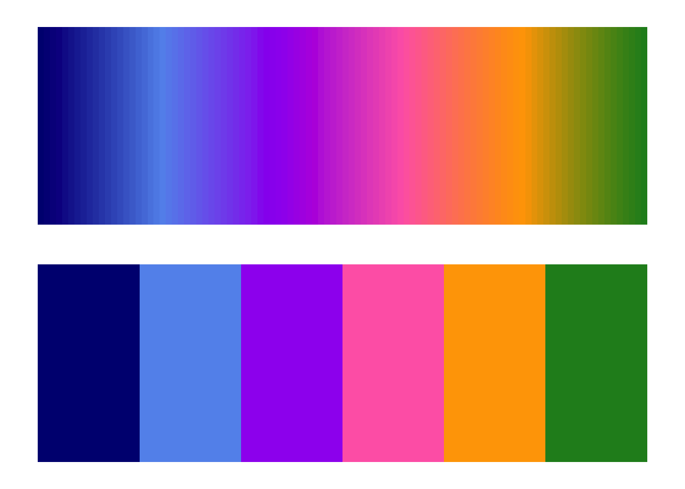
inq_dark_blue <- choose_colours[1]
inq_blue <- choose_colours[2]
inq_purple <- choose_colours[3]
inq_pink <- choose_colours[4]
inq_orange <- choose_colours[5]
inq_green <- choose_colours[6]Data
Mixed proteome
mixed_psms <-
read.csv('../Results/mixed_proteome/mixed_proteome_normal_unfiltered_psm_table.csv')
mixed_peptide <- read.csv('../Results/mixed_proteome/mixed_proteome_normal_unfiltered_peptide_table.csv')
mixed_MBR_psms <- read.csv('../Results/mixed_proteome/mixed_proteome_MBR_unfiltered_psm_table.csv')
mixed_MBR_peptide <- read.csv('../Results/mixed_proteome/mixed_proteome_MBR_unfiltered_peptide_table.csv')
mixed_MBR_proteins <- read.csv('../Results/mixed_proteome/mixed_proteome_MBR_unfiltered_protein_table.csv')
mixed_preds <-
read.csv('../Datafiles/mixed_proteome/mixed.csv') |>
mutate(file_ID = str_split_i(file, '\\_',-1)) |>
mutate(scan_number = scan_number-1)
mixed_MBR_preds <-
read.csv('../Datafiles/mixed_proteome/mixed_proteome_MBR_preds.csv') |>
mutate(file_ID = str_split_i(file, '\\_',-1))
mixed_database_proteins <-
read_xlsx('../Datafiles/mixed_proteome/Mixed_proteome_proteins.xlsx') |>
mutate(principal_protein = str_split_i(Accession, '\\s',1))
mixed_database_peptides <-
read_xlsx('../Datafiles/mixed_proteome/Mixed_proteome_peptides.xlsx')
mixed_database_psms <-
read_xlsx('../Datafiles/mixed_proteome/Mixed_proteome_psms.xlsx')
file_ids_mixed_database <- mixed_database_psms |>
mutate(file_id = `File ID`,
file_name = `Spectrum File`) |>
distinct() |>
mutate(our_file_id = str_split_i(str_split_i(file_name, '\\.',1),'\\_',-1)) |>
select(file_id, our_file_id) |>
unique()
replace_names <- setNames(file_ids_mixed_database$our_file_id, file_ids_mixed_database$file_id)
mixed_database_psms <- mixed_database_psms |>
mutate(`File ID` = str_split_i(str_split_i(`Spectrum File`, '\\.',1),'\\_',-1))
mixed_database_peptides <- mixed_database_peptides |>
rename_with(~ str_replace_all(.x, replace_names), contains("Abundance"))
mixed_fasta <- tibble(full = names(
seqinr::read.fasta('../Datafiles/mixed_proteome/mixed_human_yeast_ecoli.fasta',
as.string = TRUE))) |>
mutate(accession = str_split_i(full, '\\|', 2),
species = str_split_i(full, '\\_', 2)) |>
select(accession, species)
mixed_database_peptides <- mixed_database_peptides |>
mutate(principal_protein = str_split_i(`Master Protein Accessions`,';',1)) |>
mutate(species = mixed_fasta$species[match(principal_protein, mixed_fasta$accession)])Experiment files
ids <- c('A1','A2','A3','B1','B2','B3')
paths <- str_c('../Datafiles/mixed_proteome/mzml/20240221_MK_MEKONG_KK_FAIMS_1CV_Evo_40SPD_Whisper_1475_mixed_proteome_',ids,'.mzML')
for (file in paths){
id = str_split_i(str_split_i(file, '\\_', -1), '\\.', 1)
mzML <- grabMzmlData(file, c('MS1','MS2'))
assign(str_c('mixed_specs_',id),
mzML$MS1 |>
group_by(rt) |>
summarise(mz = list(mz), int = list(int), .groups = 'drop') |>
bind_rows(mzML$MS2 |>
select(rt, premz) |>
distinct()) |>
arrange(rt) |>
mutate(scan_nr = cur_group_rows()) |>
mutate(scan_nr = scan_nr-1) |>
mutate(MSLevel = ifelse(is.na(premz), '1','2')))
}GluC
gluc_psms <- read.csv('../Results/GluC/Gluc_normal_unfiltered_psm_table.csv')
gluc_peptides <- read.csv('../Results/GluC/Gluc_normal_unfiltered_peptide_table.csv')
gluc_proteins <- read.csv('../Results/GluC/Gluc_normal_unfiltered_protein_table.csv')
gluc_MBR_psms <- read.csv('../Results/GluC/GluC_MBR_unfiltered_psm_table.csv')
gluc_MBR_peptides <- read.csv('../Results/GluC/Gluc_MBR_unfiltered_peptide_table.csv')
gluc_MBR_proteins <- read.csv('../Results/GluC/Gluc_MBR_unfiltered_protein_table.csv')
gluc_database_psms <- read_xlsx('../Datafiles/GluC/GluC_search_PSMs.xlsx')
gluc_database_peptides <- read_xlsx('../Datafiles/GluC/GluC_search_peptides.xlsx')
gluc_database_proteins <- read_xlsx('../Datafiles/GluC/GluC_search_proteins.xlsx')
file_ids_gluc_database <- gluc_database_psms |>
mutate(file_id = `File ID`,
file_name = `Spectrum File`) |>
distinct() |>
mutate(our_file_id = str_split_i(str_split_i(file_name, '\\.',1),'\\_',-1)) |>
select(file_id, our_file_id) |>
unique()
replace_names <- setNames(file_ids_gluc_database$our_file_id, file_ids_gluc_database$file_id)
gluc_database_psms <- gluc_database_psms |>
mutate(`File ID` = str_split_i(str_split_i(`Spectrum File`, '\\.',1),'\\_',-1))
gluc_database_peptides <- gluc_database_peptides |>
rename_with(~ str_replace_all(.x, replace_names), contains("Abundance"))
gluc_database_proteins <- gluc_database_proteins |>
rename_with(~ str_replace_all(.x, replace_names), contains("Abundance"))gluc_preds <-
read_csv('../Datafiles/GluC/gluc_labelled_kpreds.csv',
show_col_types = FALSE) |>
mutate(file = str_split_i(str_split_i(sample, "_", -1), "\\.", 1),
probs = 10**log_probs) |>
rename(scan_number = spectrum_index,
target = targets,
log_probs_preds = log_probs,
probs_preds = probs) |>
mutate(target = str_replace_all(target, "I", "L"),
preds = str_replace_all(preds, "I", "L"))
preds_train <-
read_csv('../Results/GluC/GluC_calibrated_predictions.csv',
show_col_types = FALSE) |>
mutate(file = str_split_i(str_split_i(file, "_", -1), "\\.", 1)) |>
filter(train == FALSE) |>
mutate(ppm_cali = calibrated_mz_error * 1e6 / theo_mz,
ppm_iso = iso_adj_mz_error * 1e6 / theo_mz)
gluc_calibrated_preds <- gluc_preds |>
full_join(preds_train, by = c("file", "scan_number", "preds")) |>
mutate(correct = ifelse(preds == target, TRUE, FALSE))
gluc_recalibrated_preds <-
read_csv('../Results/GluC/GluC_recalibration_predictions.csv',
show_col_types = FALSE) |>
mutate(file = str_split_i(experiment_name, "_", 1),
probs = 10**log_probs) |>
rename(log_probs_cali = log_probs,
probs_cali = probs,
preds_cali = preds) |>
mutate(preds_cali = str_replace_all(preds_cali, "I", "L"))NPv3
NPv3_psms <- read.csv('../Results/NPv3/NPv3_normal_unfiltered_psm_table.csv')
NPv3_MBR_psms <- read.csv('../Results/NPv3/NPv3_MBR_unfiltered_psm_table.csv')
NPv3_MBR_peptide <- read.csv('../Results/NPv3/NPv3_MBR_unfiltered_peptide_table.csv')
NPv3_MBR_proteins <- read.csv('../Results/NPv3/NPv3_MBR_unfiltered_protein_table.csv')
NPv3_MBR_proteins_ungrouped <- read.csv('../Results/NPv3/NPv3_MBR_unfiltered_protein_table_ungrouped.csv')Plot functions
Save plots
save_fig <- function(plot, name, show = TRUE, w = 1920, h = 1440) {
path <- str_c(getwd(), '/', name)
ggsave(filename = path,
plot = plot,
width = w,
height = h,
units = 'px',
dpi = 300,
bg = 'white')
if (show){
show(plot)
}
}Plot quantification area with RT, MS1 intensities, identification and boundaries
plot_quantification_area <- function(specs, preds, target_seq_spec, fileID) {
if (str_detect(target_seq_spec,'[A-Z]')) {
target_seq <- target_seq_spec
target_spec <- preds |>
filter(file_ID == fileID) |>
filter(preds == target_seq) |>
arrange(desc(10^log_probs)) |>
head(1) |>
pull(scan_number)
}
else {
target_spec <- target_seq_spec
target_seq <- preds |>
filter(file_ID == fileID) |>
filter(scan_number == target_spec) |>
pull(preds)
}
conf <- preds |>
filter(file_ID == fileID) |>
filter(scan_number == target_spec) |>
pull(log_probs)
conf <- 10^conf
target_RT <- specs$rt[match(target_spec, specs$scan_nr)]
tolerance_RT <- 1/100 * target_RT
target_MZ <- specs$premz[match(target_spec, specs$scan_nr)]
tolerance_ppm <- 97.63457296020923 # Mixed proteome tolerance
tolerance <- (target_MZ*tolerance_ppm)/10**6
data <- specs |>
filter(MSLevel == 1) |>
unnest(cols = c(mz,int)) |>
filter(abs(rt-target_RT) <= tolerance_RT) |>
filter(abs(mz-target_MZ) <= tolerance) |>
group_by(rt) |>
summarise(int = max(int))
int_target <- data |>
filter(rt <= target_RT) |>
arrange(desc(rt)) |>
head(1) |>
pull(int)
min_bound <- data |>
filter(rt <= target_RT) |>
arrange(desc(rt)) |>
filter(lead(int) < int_target*0.2) |>
filter(int < int_target*0.2) |>
head(1) |>
pull(rt)
max_bound <- data |>
filter(rt >= target_RT) |>
arrange(rt) |>
filter(lead(int) < int_target*0.2) |>
filter(int < int_target*0.2) |>
head(1) |>
pull(rt)
if (length(max_bound) == 0){
max_bound <- max(data |> pull(rt))
}
if (length(min_bound) == 0){
min_bound <- min(data |> pull(rt))
}
p <- ggplot(data, aes(x = rt, y = int)) +
geom_line(color = inq_dark_blue, show.legend = FALSE) +
geom_ribbon(data = subset(data, rt >= min_bound & rt <= max_bound),
aes(ymin = 0, ymax = int, color = "Quantification area"),
alpha = 0.3, fill = inq_blue, linewidth = 0) +
geom_vline(aes(xintercept = target_RT, color = "Identification scan"),
linetype = "solid", size = 0.8) +
geom_vline(aes(xintercept = min_bound, color = "Boundary"),
linetype = "dashed", size = 0.8) +
geom_vline(aes(xintercept = max_bound, color = "Boundary"),
linetype = "dashed", size = 0.8) +
geom_hline(aes(yintercept = int_target * 0.2, color = "20% intensity threshold"),
linetype = "dotted", size = 1) +
scale_color_manual(
name = NULL,
values = c(
"Identification scan" = inq_pink,
"Boundary" = inq_green,
"20% intensity threshold" = inq_purple,
"Quantification area" = inq_blue
)
) +
labs(
subtitle = str_c('File: ',
fileID,
' | RT window: +/-',
round(tolerance_RT*60, digits = 2),
' seconds',
' | Scan number: ',
target_spec,
' | Confidence: ',
round(conf, digits = 2)),
x = 'RT [min]',
y = 'Intensity'
) +
theme_minimal() +
theme(
legend.position = c(0.98, 0.98),
legend.justification = c("right", "top"),
legend.background = element_rect(fill = "white", color = "white"),
legend.box.background = element_rect(color = "white"),
legend.key.height = unit(0.7, "cm"),
legend.spacing.y = unit(-0.3, "cm"),
plot.background = element_rect(color = 'white')
) +
guides(
color = guide_legend(
override.aes = list(
size = 3
)
)
)
return(p)
}Make peak comparison for MBR sequences
get_plot_data <- function(target_MZ, target_RT, ID, return_RT){
target_RT = target_RT / 60
tolerance_RT <- 2/100 * target_RT
tolerance_ppm <- 97.63457296020923 # Mixed proteome tolerance
tolerance <- (target_MZ*tolerance_ppm)/10**6
data <- get(str_c('mixed_specs_', ID)) |>
filter(MSLevel == 1) |>
unnest(cols = c(mz,int)) |>
filter(abs(rt-target_RT) <= tolerance_RT) |>
filter(abs(mz-target_MZ) <= tolerance) |>
group_by(rt) |>
summarise(int = max(int))
ints <- data |> pull(int)
rts <- data |> pull(rt)
if (return_RT){
return(list(rts))
}
else {
return(list(ints))
}
}
plot_MBR_comparison <- function(sequence, next_group = 1, exp_order = NULL) {
if (!is.null(exp_order)) {
exp_order <- exp_order
} else {
exp_order <- c('A1','A2','A3','B1','B2','B3')
}
data <-
mixed_MBR_preds |>
select(-file) |>
group_by(preds) |>
filter(n() >= 6) |>
mutate(group_min_rt = min(rt),
group_max_rt = max(rt)) |>
arrange(group_min_rt) |>
filter(preds == sequence | !any(is.na(log_probs)) & n() == 6 & n_distinct(file_ID) == 6) |>
ungroup() |>
group_by(group_min_rt)
sequence_data <- data |> filter(preds == sequence)
seq_min_rt <- min(sequence_data$group_min_rt)
seq_mz <- str_c(sequence,', m/z: ', round(head(sequence_data, 1)$mz, digits = 2))
data <- data |>
filter(group_max_rt < seq_min_rt | preds == sequence) |>
mutate(group_id = cur_group_id())
seq_group_id <- data |> filter(preds == sequence) |> head(1) |> pull(group_id)
data <- data |>
filter(preds == sequence | group_id == seq_group_id-next_group)
prior_seq_mz <- data |> filter(preds != sequence) |> head(1) |>
mutate(name = str_c(preds,', m/z: ', round(mz, digits = 2))) |> pull(name)
color_values = setNames(
c(inq_green, inq_blue, inq_orange, inq_pink),
c(prior_seq_mz, seq_mz, 'Adjusted identification', 'Identification')
)
p <- data |>
ungroup() |>
select(-group_min_rt, -group_max_rt) |>
rowwise() |>
mutate(
rts = get_plot_data(target_MZ = mz, target_RT = rt, ID = file_ID, return_RT = TRUE),
ints = get_plot_data(target_MZ = mz, target_RT = rt, ID = file_ID, return_RT = FALSE),
mbr = ifelse(is.na(log_probs), TRUE, FALSE),
preds = str_c(preds,', m/z: ', round(mz, digits = 2)),
file_ID = factor(file_ID, levels = exp_order)
) |>
mutate(true_rt = rts[which.max(ints)]) |>
unnest(cols = c(rts, ints)) |>
ggplot(aes(x = rts, y = ints, color = preds)) +
geom_line() +
geom_vline(aes(xintercept = rt / 60, linetype = mbr, color = 'Identification')) +
geom_vline(data = function(d) d |> filter(mbr == TRUE),
aes(xintercept = true_rt, color = 'Adjusted identification'),
linetype = 'dotdash') +
scale_color_manual(values = color_values) +
theme_minimal() +
facet_grid(file_ID ~ ., scales = 'free') +
labs(
title = "Reference and target sequence MBR example",
x = "Retention Time (minutes)",
y = "Intensity",
linetype = "MBR identification",
color = NULL
)
return(p)
}Plot quantification area for MBR with RT, MS1 intensities, initial and final identification and boundaries
plot_quantification_area_MBR_full <- function(specs, seq, target_MZ, initial_RT, fileID) {
initial_RT <- initial_RT/60
initial_tolerance <- 1.01*1.02 * initial_RT
tolerance_ppm <- 97.63457296020923 # Mixed proteome tolerance
tolerance <- (target_MZ*tolerance_ppm)/10**6
data <- specs |>
filter(MSLevel == 1) |>
unnest(cols = c(mz,int)) |>
filter(abs(rt-initial_RT) <= initial_tolerance) |>
filter(abs(mz-target_MZ) <= tolerance) |>
group_by(rt) |>
summarise(int = max(int))
subset_data <- data |>
filter(abs(rt-initial_RT) <= 2/100 * initial_RT)
subset_min <- min(subset_data$rt)
subset_max <- max(subset_data$rt)
final_RT <- subset_data |>
arrange(desc(int)) |>
head(1) |>
pull(rt)
int_target <- subset_data |>
arrange(desc(int)) |>
head(1) |>
pull(int)
final_tolerance <- 1/100 * final_RT
final_data <- data |>
filter(abs(rt-final_RT) <= final_tolerance)
min_bound <- data |>
filter(rt <= final_RT) |>
arrange(desc(rt)) |>
filter(lead(int) < int_target*0.2) |>
filter(int < int_target*0.2) |>
head(1) |>
pull(rt)
max_bound <- data |>
filter(rt >= final_RT) |>
arrange(rt) |>
filter(lead(int) < int_target*0.2) |>
filter(int < int_target*0.2) |>
head(1) |>
pull(rt)
plot_data <- data |>
filter(rt >= min(subset_min, min_bound)) |>
filter(rt <= max(subset_max, max_bound))
p <- ggplot(plot_data, aes(x = rt, y = int)) +
geom_line(color = inq_dark_blue, show.legend = FALSE) +
geom_ribbon(data = subset(data, rt >= min_bound & rt <= max_bound),
aes(ymin = 0, ymax = int, color = "Quantification area"),
alpha = 0.3, fill = inq_blue, linewidth = 0) +
geom_vline(aes(xintercept = initial_RT, color = "Initial identification"),
linetype = "dotted", size = 0.8) +
geom_vline(aes(xintercept = final_RT, color = "Final identification"),
linetype = "solid", size = 0.8) +
geom_vline(aes(xintercept = subset_min, color = "Search boundary"),
linetype = "dotdash", size = 0.8) +
geom_vline(aes(xintercept = subset_max, color = "Search boundary"),
linetype = "dotdash", size = 0.8) +
geom_vline(aes(xintercept = min_bound, color = "Boundary"),
linetype = "dashed", size = 0.8) +
geom_vline(aes(xintercept = max_bound, color = "Boundary"),
linetype = "dashed", size = 0.8) +
geom_hline(aes(yintercept = int_target * 0.2, color = "20% intensity threshold"),
linetype = "dotted", size = 1) +
scale_color_manual(
name = NULL,
values = c(
"Initial identification" = inq_orange,
"Final identification" = inq_pink,
"Search boundary" = inq_blue,
"Boundary" = inq_green,
"20% intensity threshold" = inq_purple,
"Quantification area" = inq_blue
)
) +
labs(
subtitle = str_c('File: ',
fileID,
' | Initial RT: ',
round(initial_RT, digits = 2),
' min',
' | Final RT: ',
round(final_RT, digits = 2),
' min',
' | Final RT window: +/-',
round(final_RT*0.01*60, digits = 2),
' seconds'),
x = 'RT [min]',
y = 'Intensity'
) +
theme_minimal() +
theme(
legend.justification = c("right"),
legend.background = element_rect(fill = "white", color = "white"),
legend.box.background = element_rect(color = "white"),
legend.key.height = unit(0.7, "cm"),
legend.spacing.y = unit(-0.3, "cm"),
plot.background = element_rect(color = 'white')
) +
guides(
color = guide_legend(
override.aes = list(
size = 3
)))
return(p)
}Plot quantification area for MBR with RT, MS1 intensities, final identification and boundaries
plot_quantification_area_MBR <- function(specs, seq, target_MZ, initial_RT, fileID) {
initial_RT <- initial_RT/60
initial_tolerance <- 1.01*1.02 * initial_RT
tolerance_ppm <- 97.63457296020923 # Mixed proteome tolerance
tolerance <- (target_MZ*tolerance_ppm)/10**6
data <- specs |>
filter(MSLevel == 1) |>
unnest(cols = c(mz,int)) |>
filter(abs(rt-initial_RT) <= initial_tolerance) |>
filter(abs(mz-target_MZ) <= tolerance) |>
group_by(rt) |>
summarise(int = max(int))
subset_data <- data |>
filter(abs(rt-initial_RT) <= 2/100 * initial_RT)
subset_min <- min(subset_data$rt)
subset_max <- max(subset_data$rt)
final_RT <- subset_data |>
arrange(desc(int)) |>
head(1) |>
pull(rt)
int_target <- subset_data |>
arrange(desc(int)) |>
head(1) |>
pull(int)
final_tolerance <- 1/100 * final_RT
final_data <- data |>
filter(abs(rt-final_RT) <= final_tolerance)
min_bound <- data |>
filter(rt <= final_RT) |>
arrange(desc(rt)) |>
filter(lead(int) < int_target*0.2) |>
filter(int < int_target*0.2) |>
head(1) |>
pull(rt)
max_bound <- data |>
filter(rt >= final_RT) |>
arrange(rt) |>
filter(lead(int) < int_target*0.2) |>
filter(int < int_target*0.2) |>
head(1) |>
pull(rt)
p <- ggplot(final_data, aes(x = rt, y = int)) +
geom_line(color = inq_dark_blue, show.legend = FALSE) +
geom_ribbon(data = subset(data, rt >= min_bound & rt <= max_bound),
aes(ymin = 0, ymax = int, color = "Quantification area"),
alpha = 0.3, fill = inq_blue, linewidth = 0) +
geom_vline(aes(xintercept = final_RT, color = "Final identification"),
linetype = "solid", size = 0.8) +
geom_vline(aes(xintercept = min_bound, color = "Boundary"),
linetype = "dashed", size = 0.8) +
geom_vline(aes(xintercept = max_bound, color = "Boundary"),
linetype = "dashed", size = 0.8) +
geom_hline(aes(yintercept = int_target * 0.2, color = "20% intensity threshold"),
linetype = "dotted", size = 1) +
scale_color_manual(
name = NULL,
values = c(
"Final identification" = inq_pink,
"Boundary" = inq_green,
"20% intensity threshold" = inq_purple,
"Quantification area" = inq_blue
)
) +
labs(
subtitle = str_c('File: ',
fileID,
' | Final RT: ',
round(final_RT, digits = 2),
' min',
' | Final RT window: +/-',
round(final_RT*0.01*60, digits = 2),
' seconds'),
x = 'RT [min]',
y = 'Intensity'
) +
theme_minimal() +
theme(
legend.position = c(0.98, 0.98),
legend.justification = c("right", "top"),
legend.background = element_rect(fill = "white", color = "white"),
legend.box.background = element_rect(color = "white"),
legend.key.height = unit(0.7, "cm"),
legend.spacing.y = unit(-0.2, "cm"),
plot.background = element_rect(color = 'white')
) +
guides(
color = guide_legend(
override.aes = list(
size = 3
)
)
)
return(p)
}Plot MBR Bar plot
plot_bar_MBR_count <- function(psms, name) {
p <- psms |>
mutate(MBR = ifelse(is.na(conf), 'MBR',
ifelse(is.na(abundance), 'Not quantified', 'Quantified'))) |>
count(file_id, MBR) |>
group_by(file_id) |>
mutate(percentage = (n / sum(n)) * 100) |>
mutate(MBR = factor(MBR,
levels = MBR |>
table() |>
sort(decreasing = FALSE) |>
names())) |>
ggplot(aes(x = file_id, y = n, fill = MBR)) +
geom_bar(stat = 'identity', alpha = 0.8) +
scale_fill_manual(values = c('MBR' = inq_purple,
'Quantified' = inq_green,
'Not quantified' = 'grey')) +
geom_label(aes(label = str_c(round(percentage, digits = 1), '%')),
position = position_stack(vjust = 0.5),
color = 'white',
size = 3,
alpha = 0.6,
label.size = 0,
show.legend = FALSE) +
theme_minimal() +
labs(title = str_c(name, ': Identified predictions by InstaNovo and MBR'),
x = 'Experiment',
y = 'Count',
fill = '')
return(p)
}Log2 fold change plot for the mixed proteome experiment
plot_fold_change_mixed_proteome <- function(table,
ylims = c(-8,8),
xlims = c(10,40),
abundance_pattern,
mbr,
type,
titles = TRUE,
custom_titles = '') {
if (type == 'Protein'){
fc_data <- table |>
group_by(principal_protein) |>
mutate(protein_group = str_c(unique(protein_group), collapse = ';')) |>
ungroup() |>
distinct() |>
select(principal_protein, species, contains('ormalized')) |>
pivot_longer(cols = contains('ormalized'),
names_to = c("experiment"),
names_pattern = abundance_pattern,
values_to = "abundance") |>
filter(!str_detect(experiment, '1')) |>
mutate(abundance = ifelse(abundance == 0, NA, abundance)) |>
mutate(experiment = str_extract(experiment,'[AB]')) |>
group_by(principal_protein, species, experiment) |>
summarise(abundance_comb = mean(abundance, na.rm = TRUE), .groups = 'drop') |>
mutate(abundance_comb = na_if(abundance_comb, NaN)) |>
pivot_wider(names_from = experiment,
values_from = abundance_comb) |>
filter(!if_all(c(A,B), is.na)) |>
drop_na() |>
mutate(fold_change = A/B,
mean_abundance = (A+B)/2)
} else {
fc_data <- table |>
select(sequence, meas_mass, species, contains('ormalized') ) |>
pivot_longer(cols = contains('ormalized'),
names_to = c("experiment"),
names_pattern = abundance_pattern,
values_to = "abundance") |>
mutate(abundance = ifelse(abundance == 0, NA, abundance)) |>
drop_na(species) |>
drop_na(abundance) |>
filter(!str_detect(experiment, '1')) |>
mutate(experiment = str_extract(experiment,'[AB]')) |>
group_by(sequence, species, experiment, meas_mass) |>
summarise(abundance_comb = mean(abundance, na.rm = TRUE), .groups = 'drop') |>
pivot_wider(names_from = experiment,
values_from = abundance_comb) |>
drop_na() |>
mutate(A = replace_na(A,1),
B = replace_na(B,1)) |>
mutate(fold_change = A/B,
mean_abundance = (A+B)/2)
}
if (custom_titles != ''){
title_labs <- labs(title = custom_titles,
color = 'Species')
}
else if (titles) {
title_labs <- labs(title = str_c('Mixed proteome: ', type,
' fold change over mean normalized abundance'),
subtitle = str_c('for mean(A2,A3)/mean(B2,B3) with NAs dropped', mbr),
color = 'Species')
} else {
title_labs <- labs(color = 'Species')
}
# Main scatterplot
scatter_plot <- fc_data |>
ggplot(aes(x = log2(mean_abundance),
y = log2(fold_change),
color = species)) +
geom_point() +
geom_hline(yintercept = c(2, 0, -1),
linetype = 'dashed',
color = c(inq_pink, inq_orange, inq_purple)) +
title_labs +
scale_color_manual(values = c(ECOLI = inq_pink,
HUMAN = inq_orange,
YEAST = inq_purple),
guide = guide_legend(override.aes = list(shape = 15))) +
coord_cartesian(ylim = ylims, xlim = xlims) +
theme_minimal() +
theme(legend.position = 'none')
# Boxplot of log2(fold_change) per species
box_plot <- fc_data |>
ggplot(aes(x = species, y = log2(fold_change), color = species)) +
geom_boxplot(width = 0.6, show.legend = FALSE) +
geom_point(aes(x = species, y = log2(fold_change), color = species),
alpha = 0,
show.legend = TRUE) +
geom_hline(yintercept = c(2, 0, -1),
linetype = 'dashed',
color = c(inq_pink, inq_orange, inq_purple)) +
scale_color_manual(values = c(ECOLI = inq_pink,
HUMAN = inq_orange,
YEAST = inq_purple),
guide = guide_legend(override.aes = list(alpha = 1,
shape = 15,
size = 5))) +
coord_cartesian(ylim = ylims) +
theme_void() +
labs(color = 'Species') +
theme(
axis.title = element_blank(),
axis.text = element_blank(),
axis.ticks = element_blank(),
legend.position = "right"
)
p <- scatter_plot + box_plot + plot_layout(widths = c(3, 1), axis_titles = 'collect')
return(p)
}Venn diagram
plot_venn_diagram <- function(name1, name2, list1, list2) {
fill_colors <- c(inq_pink, inq_blue)
for_venn <- setNames(list(list1, list2), c(name1, name2))
venn <- ggvenn(
for_venn,
fill_color = fill_colors,
stroke_size = 0,
set_name_size = 0,
auto_scale = TRUE
)
names(fill_colors) <- c(name1, name2)
legend_data <- data.frame(group = factor(names(fill_colors), levels = names(fill_colors)))
legend_plot <- ggplot(legend_data, aes(x = 0.01, y = group, fill = group)) +
geom_tile(width = 0, height = 0, alpha = 0.5) +
scale_fill_manual(name = NULL, values = fill_colors) +
theme_void() +
theme(
legend.position = "bottom",
legend.text = element_text(size = 13),
plot.margin = margin(10, 0, 10, 0)
)
combined_plot <- venn / legend_plot + plot_layout(heights = c(4,0))
return(combined_plot)
}Calibration scatter plot trends
plot_density_point <- function(df, x, title, ylim) {
df <- df |>
filter(!is.na(ppm_iso),
!is.na(ppm_cali))
if(x == "rt"){
df <- df |>
mutate(x = rt)
xlab <- "Retention time (s)"
}
else{
df <- df |>
mutate(x = meas_mz)
xlab <- "Measured m/z"
}
if(title == "Calibrated"){
df <- df |>
mutate(ppm = ppm_cali)
}
else{
df <- df |>
mutate(ppm = ppm_iso)
}
y_min_ppm = floor(min(df$ppm_iso, df$ppm_cali))
y_max_ppm = ceiling(max(df$ppm_iso, df$ppm_cali))
plot <- df |>
ggplot(aes(x = x,
y = ppm)) +
geom_pointdensity(size = 0.5) +
scale_color_gradient(low = inq_orange, high = inq_purple) +
geom_hline(aes(yintercept = 0), size = 0.5, linetype = "dashed", color = "black") +
geom_smooth(method = "loess", se = FALSE, color = inq_dark_blue, size = 0.7) +
coord_cartesian(ylim = c(-1*ylim, ylim)) +
theme_minimal() +
theme(legend.position = "none") +
labs(x = xlab, y = "Error (ppm)", title = title)
return(plot)
}Calibration boxplot
plot_boxplot_calibration <- function(df, outliers = FALSE) {
df |>
filter(!is.na(correct)) |>
pivot_longer(cols = c(iso_adj_mz_error, calibrated_mz_error),
names_to = "type", values_to = "value") |>
mutate(type = factor(type,
levels = c("iso_adj_mz_error",
"calibrated_mz_error"))) |>
ggplot(aes(x = type, y = value, fill = correct)) +
geom_boxplot(alpha = 0.7, outliers = outliers) +
scale_fill_manual(values = c("TRUE" = inq_green,
"FALSE" = inq_blue),
labels = c("TRUE" = "Correct",
"FALSE" = "Wrong")) +
labs(x = "",
y = "m/z error",
fill = "Identification",
title = "Error in m/z before and after calibration") +
scale_x_discrete(
labels = c("iso_adj_mz_error" = "After isotope\nadjustment",
"calibrated_mz_error" = "After calibration")) +
theme_minimal() +
theme(title = element_text(size = 8.5),
legend.title = element_text(size = 8.5),
legend.text = element_text(size = 7.5),
legend.position = "bottom")
}Calibration density
plot_density_calibration <- function(df, calibrated = TRUE) {
if(calibrated){
df <- df |>
mutate(mz_error = calibrated_mz_error)
title = "After calibration"
}
else{
df <- df |>
mutate(mz_error = iso_adj_mz_error)
title = "Before calibration"
}
df |>
filter(!is.na(correct)) |>
ggplot() +
geom_vline(xintercept = 0, linetype = "dashed", color = "red", size = 0.6) +
geom_density(aes(mz_error,
color = correct), size = 0.7) +
scale_color_manual(values = c("TRUE" = inq_green,
"FALSE" = inq_blue),
labels = c("TRUE" = "Correct",
"FALSE" = "Wrong")) +
coord_cartesian(xlim = c(-0.01, 0.01)) +
labs(
title = title,
x = "mz error",
y = "Density",
color = "Identification"
) +
theme_minimal() +
theme(
axis.title = element_text(size = 12),
legend.title = element_text(size = 12),
legend.text = element_text(size = 10)
)
}C-terminal amino acid distribution plot
plot_c_term_AA_distribution <- function(peptides, title, abundance_pattern) {
p <- peptides |>
select(sequence, contains('ormalized')) |>
pivot_longer(cols = contains('ormalized'),
names_to = c("experiment"),
names_pattern = abundance_pattern,
values_to = "abundance") |>
drop_na(abundance) |>
mutate(experiment = str_extract(experiment, '\\D+'),
c_term_cleav = str_detect(sequence, '[KRED]$')) |>
mutate(c_term_cleav = ifelse(c_term_cleav, str_extract(sequence, '\\D{1}$'),'Other')) |>
mutate(c_term_cleav = factor(c_term_cleav,
levels = c('E','D','K','R','Other'))) |>
group_by(experiment, c_term_cleav) |>
summarise(abundance_comb = sum(abundance, na.rm = TRUE), .groups = 'keep') |>
mutate(abundance_comb = na_if(abundance_comb, 0)) |>
summarise(total_abundance = sum(abundance_comb, na.rm = TRUE), .groups = 'drop') |>
group_by(experiment) |>
mutate(total_abundance_experiment = sum(total_abundance)) |>
ungroup() |>
mutate(abundance_pct = total_abundance / total_abundance_experiment * 100) |>
mutate(label = str_c(round(abundance_pct, digits = 1), '%')) |>
select(-total_abundance_experiment) |>
ggplot(aes(x = experiment, y = abundance_pct, fill = c_term_cleav)) +
geom_col(width = 0.6, alpha = 0.8) +
geom_label(aes(label = ifelse(abundance_pct > 0.2, label, NA)),
position = position_stack(vjust = 0.5),
size = 3,
color = "white",
label.size = 0,
alpha = 0.6,
show.legend = FALSE,
na.rm = TRUE) +
scale_fill_manual(values = c('E' = inq_green,
'D' = inq_purple,
'K' = inq_blue,
'R' = inq_dark_blue,
'Other' = 'grey')) +
theme_minimal() +
theme(legend.position = 'right',
legend.title.position = 'top',
legend.direction = 'vertical') +
labs(title = title,
x = 'Experiment',
y = 'Abundance [%]',
fill = 'C-Terminal \nAmino Acid')
return(p)
}Species distribution
plot_species_distribution <- function(peptides,
title,
subtitle = '',
abundance_pattern) {
if (subtitle != ''){
custom_labs <-
labs(title = title,
subtitle = subtitle,
x = 'Experiment',
y = 'Abundance [%]',
fill = 'Species')
} else {
custom_labs <- labs(title = title,
x = 'Experiment',
y = 'Abundance [%]',
fill = 'Species')
}
p <- peptides |>
select(sequence, meas_mass, species, contains('ormalized')) |>
pivot_longer(cols = contains('ormalized'),
names_to = c("experiment"),
names_pattern = abundance_pattern,
values_to = "abundance") |>
mutate(abundance = ifelse(abundance == 0, NA, abundance)) |>
drop_na(abundance) |>
filter(!str_detect(experiment, '1')) |>
mutate(experiment = str_extract(experiment,'[AB]')) |>
group_by(sequence, species, experiment, meas_mass) |>
summarise(abundance_comb = sum(abundance, na.rm = TRUE), .groups = 'drop') |>
mutate(abundance_comb = na_if(abundance_comb, 0)) |>
group_by(experiment, species) |>
summarise(total_abundance = sum(abundance_comb, na.rm = TRUE), .groups = 'drop') |>
group_by(experiment) |>
mutate(total_abundance_experiment = sum(total_abundance)) |>
ungroup() |>
mutate(abundance_pct = (total_abundance / total_abundance_experiment) * 100) |>
mutate(label = str_c(round(abundance_pct, digits = 1),'%')) |>
select(-total_abundance_experiment) |>
ggplot(aes(x = experiment, y = abundance_pct, fill = species)) +
geom_col(alpha = 0.9) +
geom_label(aes(label = ifelse(abundance_pct > 1, label, NA)),
position = position_stack(vjust = 0.5),
size = 3,
color = "white",
label.size = 0,
alpha = 0.6,
show.legend = FALSE,
na.rm = TRUE) +
scale_fill_manual(values = c('HUMAN' = inq_orange,
'YEAST' = inq_purple,
'ECOLI' = inq_pink,
'NA' = 'grey')) +
custom_labs +
theme_minimal() +
theme(legend.position = 'right',
legend.title.position = 'top',
legend.direction = 'vertical')
return(p)
}Protein Groups
plot_groups <- function(ungrouped_protein_table,
protein_group_table,
selected_protein,
show_protein_names = FALSE) {
selected_protein <- fixed(selected_protein)
plotting_table <- ungrouped_protein_table |>
mutate(protein_type = ifelse(str_detect(accession,'^B_fig'),
'Native',
ifelse(str_detect(accession, '^P'),
'Phage', 'Anti-viral'))) |>
select(accession, no_peptides, no_unique_peptides_protein, peptide_seqs, protein_type) |>
mutate(peptide_seqs = str_split(peptide_seqs, ";")) |>
unnest(peptide_seqs)
# Initialize protein group based on selected protein
protein_group <- protein_group_table |>
filter(str_detect(protein_group, selected_protein) |
str_detect(principal_protein, selected_protein))
repeat {
# Extract peptides from the current protein group
peptide_group <- protein_group |>
select(peptide_seqs) |>
mutate(peptide_seqs = str_split(peptide_seqs, ";")) |>
unnest(peptide_seqs) |>
pull(peptide_seqs) |>
unique() # Get unique peptides as a vector
found_proteins <- protein_group |>
select(protein_group, principal_protein) |>
mutate(Proteins = ifelse(is.na(protein_group), principal_protein,
str_split(protein_group, ';'))) |>
select(Proteins) |>
unnest(Proteins) |>
pull(Proteins) |>
unique()
# Remove empty strings from found protein
found_proteins <- found_proteins[found_proteins != ""]
# Find all proteins connected to these peptides
new_protein_group <- protein_group_table |>
rowwise() |>
filter(
any(str_detect(peptide_seqs, peptide_group)) |
any(str_detect(fixed(principal_protein), fixed(found_proteins))) |
any(str_detect(fixed(protein_group), fixed(found_proteins)))) |>
ungroup()
# Stop if no new proteins were found
if (nrow(new_protein_group) == nrow(protein_group)) {
break
}
# Expand protein group
protein_group <- new_protein_group
}
# Extract Master proteins
protein_masters <- protein_group |>
select(principal_protein) |>
distinct() |>
pull()
# Extract all individual proteins from the protein group
protein_group <- protein_group |>
select(protein_group, principal_protein) |>
mutate(Proteins = ifelse(is.na(protein_group), principal_protein,
str_split(protein_group, ';'))) |>
select(Proteins) |>
unnest(Proteins)
protein_group <- protein_group$Proteins
protein_group <- protein_group[protein_group != ""]
# Create groupings for convex hulls
groupings <- list()
for (protein in protein_masters) {
this_group <- protein_group_table |>
filter(str_detect(principal_protein, protein)) |>
select(principal_protein, protein_group, peptide_seqs) |>
mutate(peptide_seqs = str_split(peptide_seqs, ";"),
Proteins = str_split(protein_group, ';'),
Master_protein = principal_protein) |>
select(Master_protein, peptide_seqs, Proteins) |>
unnest(peptide_seqs) |>
unnest(Proteins) |>
pivot_longer(c(Master_protein, Proteins, peptide_seqs), names_to = 'All') |>
pull(value) |>
unique()
groupings[[protein]] <- this_group
}
# Convert data into an edge list (Protein - Peptide relationships)
edge_list <- plotting_table |>
select(accession, peptide_seqs) |>
unnest(peptide_seqs)
graph <- graph_from_data_frame(edge_list, directed = FALSE)
# Identify connected components (clusters)
clusters <- components(graph)
# Add cluster information as a vertex attribute
V(graph)$cluster <- clusters$membership
# Identify node types (Protein or Peptide)
V(graph)$type <- ifelse(V(graph)$name %in% protein_masters,
"Master Protein",
ifelse(V(graph)$name %in% protein_group,
'Protein', "Peptide"))
# Ensure correct Unique Peptides mapping using left_join
unique_peptide_df <- plotting_table |>
select(accession, no_unique_peptides_protein) |>
distinct()
unique_peptide_map <- deframe(unique_peptide_df)
V(graph)$no_unique_peptides_protein <- ifelse(
(V(graph)$type == "Protein" | V(graph)$type == "Master Protein"),
unique_peptide_map[V(graph)$name], # Lookup correct value
NA # Peptides get NA
)
# Convert cluster membership into a dataframe
cluster_df <- data.frame(
name = V(graph)$name,
cluster = clusters$membership
)
# Find the cluster of the selected protein
selected_cluster <- filter(cluster_df, name == selected_protein)$cluster
# Get all the nodes connected to the selected protein's cluster
connected_nodes <- neighborhood(graph, order = 1, nodes = protein_group)[[1]]
# Get clusters of connected nodes
connected_clusters <- unique(clusters$membership[connected_nodes])
# Filter graph to include all nodes from connected clusters
subgraph_nodes <- cluster_df |>
filter(cluster %in% connected_clusters) |>
pull(name)
subgraph <- induced_subgraph(graph, vids = subgraph_nodes)
# Ensure correct Protein/Peptide classification
V(subgraph)$type <- ifelse(V(subgraph)$name %in% protein_masters,
"Master Protein",
ifelse(V(subgraph)$name %in% protein_group,
'Protein', "Peptide"))
lookup_table <- plotting_table |>
filter(accession %in% V(subgraph)$name) |>
select(accession, protein_type) |>
unique()
V(subgraph)$color_label <- factor(ifelse(
(V(subgraph)$type == "Protein" | V(subgraph)$type == "Master Protein"),
lookup_table$protein_type[match(V(subgraph)$name, lookup_table$accession)],
"Peptide"
))
# Define colors manually for legend'
color_mapping <- c('Anti-viral' = inq_purple,
'Native' = inq_dark_blue,
'Phage' = inq_orange)
type_mapping <- c('Master Protein' = 15,
'Protein' = 17,
'Peptide' = 16)
V(subgraph)$label <- ifelse(
(V(subgraph)$type == "Protein" |
V(subgraph)$type == "Master Protein") & show_protein_names,
V(subgraph)$name,
""
# V(subgraph)$name
)
# Extract graph layout
graph_layout <- create_layout(subgraph, layout = "stress")
# Extract coordinates from the layout
layout_df <- as.data.frame(graph_layout)
# Compute convex hulls for each group
hull_df <- bind_rows(
lapply(names(groupings), function(group) {
group_nodes <- groupings[[group]]
group_layout <- layout_df |>
filter(name %in% group_nodes) |>
select(x, y, name) |>
mutate(Group = group)
# Compute convex hull if at least 3 points exist
if (nrow(group_layout) >= 3) {
hull_points <- chull(group_layout$x, group_layout$y)
expanded_hull <- group_layout[hull_points, ]
# Apply padding by shifting points outward
expanded_hull <- expanded_hull |>
mutate(x = x + 0.07 * (x - mean(x)), # Expand outward
y = y + 0.07 * (y - mean(y))) # Expand outward
expanded_hull
} else {
group_layout
}
})
)
# Ensure correct protein names
protein_name_map <- unique_peptide_df |> deframe()
# Plot with convex hulls
ggraph(graph_layout) +
geom_polygon(data = hull_df, aes(x = x, y = y, group = Group),
alpha = 0, color = "black") +
geom_edge_link(color = "gray80", alpha = 0.5) +
geom_node_point(aes(color = color_label, shape = type, size = type)) +
geom_node_text(aes(label = label), size = 4, vjust = -0.5, repel = TRUE) +
scale_shape_manual(values = type_mapping, name = "Type") +
scale_color_manual(values = color_mapping, name = "Protein species") +
scale_size_manual(values = c(4,1,4), guide = "none") +
labs(title = str_c('Protein group containing ', selected_protein)) +
theme(legend.position = "bottom", legend.direction = "vertical") +
theme(panel.background = element_rect(fill = "white", color = "white"))
}Plot display
The mixed proteome experiment
Quantification spectras with MBR
seq <- 'GACLLPK'
# Extract the data for the plots
assign(str_c(seq, '_data'), mixed_MBR_preds |>
filter(preds == seq) |>
select(preds, file_ID, mz, rt, log_probs)
)
order <- get(str_c(seq,'_data')) |>
arrange(is.na(log_probs)) |>
pull(file_ID)
assign(str_c(seq,'_comparison'),
plot_MBR_comparison(seq,
next_group = 1,
exp_order = order)
)
save_fig(get(str_c(seq,'_comparison')), 'GACLLPK_combined_MBR.png', h = 1440*1.4)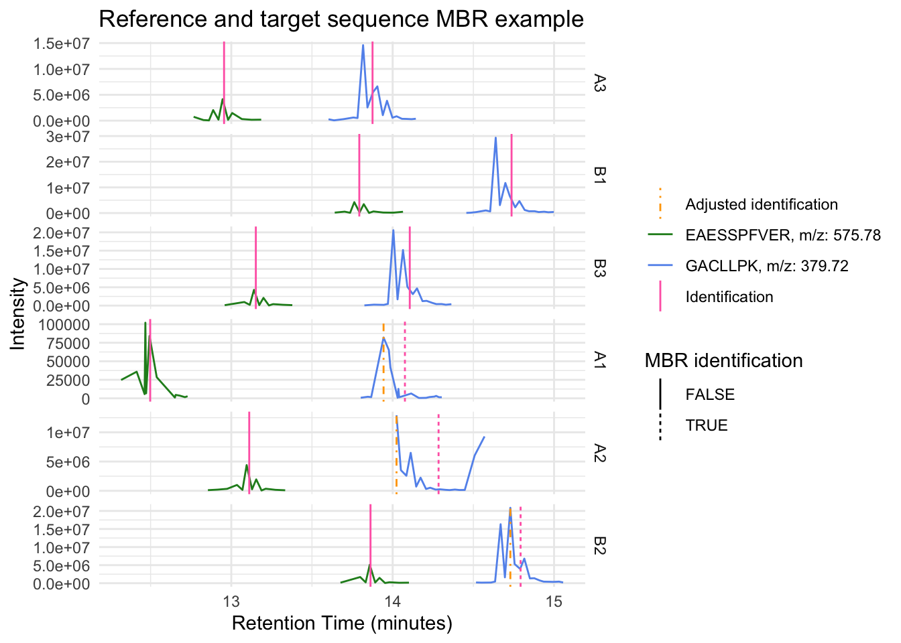
for (i in 1:nrow(get(str_c(seq,'_data')))) {
row <- get(str_c(seq,'_data'))[i,]
file_id <- row$file_ID
MBR <- is.na(row$log_probs)
if (!MBR) {
assign(str_c(seq,'_',file_id),
plot_quantification_area(
specs = get(str_c('mixed_specs_',file_id)),
preds = mixed_preds,
target_seq_spec = seq,
fileID = file_id
)
)
} else {
mz <- row$mz
rt <- row$rt
assign(str_c(seq,'_',file_id),
plot_quantification_area_MBR(
specs = get(str_c('mixed_specs_',file_id)),
seq = seq,
fileID = file_id,
target_MZ = mz,
initial_RT = rt
)
)
assign(str_c(seq,'_',file_id,'_MBR'),
plot_quantification_area_MBR_full(
specs = get(str_c('mixed_specs_',file_id)),
seq = seq,
fileID = file_id,
target_MZ = mz,
initial_RT = rt
)
)
}
}Combining the plots for comparison:
MBR_false <- get(str_c(seq,'_data')) |>
filter(!is.na(log_probs)) |>
pull(file_ID)
MBR_true <- get(str_c(seq,'_data')) |>
filter(is.na(log_probs)) |>
pull(file_ID)
assign(str_c(seq,'_identified'), Reduce(`+`,mget(str_c(seq,'_',MBR_false))) +
plot_layout(1,3, guides = 'collect',
axis_titles = 'collect') +
plot_annotation(title = 'Mixed proteome: InstaNovo predictions for GACLLPK') &
theme(legend.position = 'bottom')
)
assign(str_c(seq,'_MBR'), Reduce(`+`,mget(str_c(seq,'_',MBR_true,'_MBR'))) +
plot_layout(1,3, guides = 'collect', axis_titles = 'collect') +
plot_annotation(title = 'Mixed proteome: MBR predictions for GACLLPK with initial RT') &
theme(legend.position = 'bottom')
)
assign(str_c(seq,'_MBR_final'), Reduce(`+`,mget(str_c(seq,'_',MBR_true))) +
plot_layout(1,3, guides = 'collect', axis_titles = 'collect') +
plot_annotation(title = 'Mixed proteome: MBR predictions for GACLLPK') &
theme(legend.position = 'bottom')
)save_fig(get(str_c(seq,'_identified')),
str_c(seq,'_identified.png'),
w = 1920*1.1)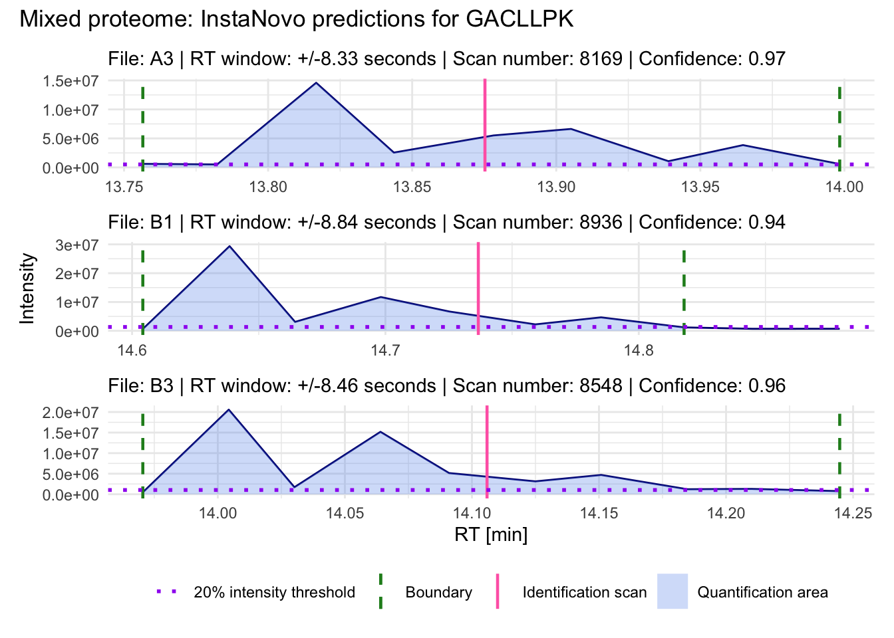
save_fig(get(str_c(seq,'_MBR')),
str_c(seq,'_MBR.png'),
w = 1920*1.2,
h = 1440*1.1)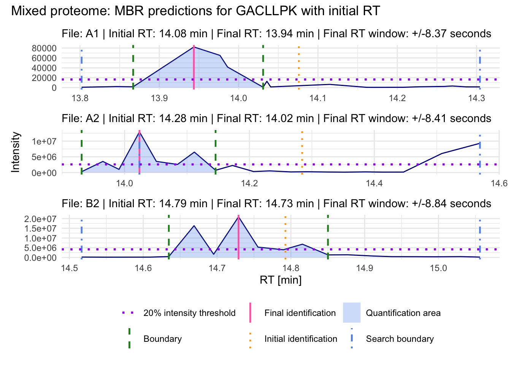
save_fig(get(str_c(seq,'_MBR_final')),
str_c(seq,'_MBR_final.png'),
w = 1920*1.1)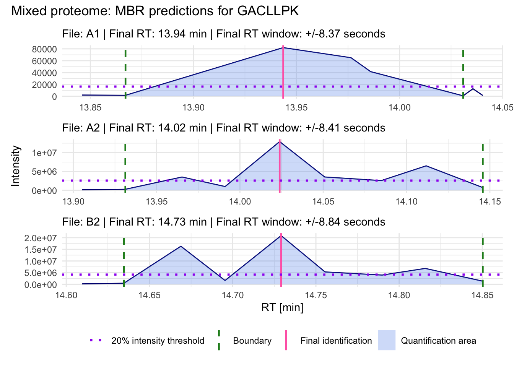
Comparing MBR and non-MBR abundances
save_fig(plot_bar_MBR_count(mixed_MBR_psms, 'Mixed proteome'),
'mixed_MBR_bar_plot.png',
h = 1340)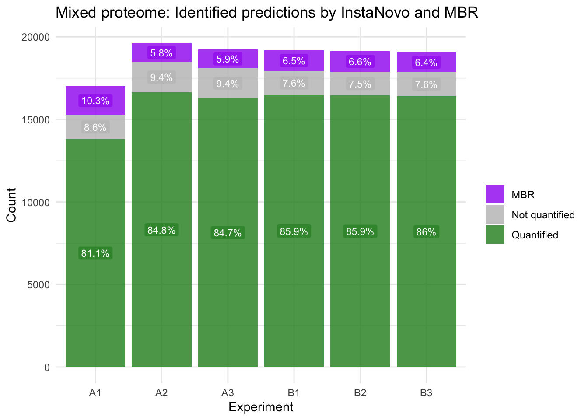
INQuant and database search log2 fold change for different species with boxplots
custom_xlims <- c(14,32)
fold_change_peptide_inquant <-
plot_fold_change_mixed_proteome(
table = mixed_peptide |>
mutate(species = mixed_fasta$species
[match(str_split_i(principal_protein,';',1),
mixed_fasta$accession)]),
abundance_pattern = 'abundance_(.*)_normalized',
type = 'Peptide',
custom_title = 'INQuant',
xlims = custom_xlims)
fold_change_peptide_database <- plot_fold_change_mixed_proteome(
table = mixed_database_peptides |>
mutate(species = mixed_fasta$species
[match(str_split_i(`Master Protein Accessions`,';',1),
mixed_fasta$accession)],
sequence = `Annotated Sequence`,
meas_mass = `Theo. MH+ [Da]`),
abundance_pattern = 'Abundances \\(Normalized\\): (.*): Sample, [AB]',
type = 'Peptide', custom_title = 'Database',
xlims = custom_xlims)
mixed_fold_change_peptide_combined <-
((fold_change_peptide_inquant / fold_change_peptide_database) +
plot_layout(1, 2, axis_titles = 'collect', guides = 'collect') +
plot_annotation(title =
'Mixed proteome: Peptide fold change over mean normalized abundance',
subtitle = 'for mean(A2,A3)/mean(B2,B3) with NAs dropped'))
save_fig(mixed_fold_change_peptide_combined,
'mixed_fold_change_plot_inquant_vs_database_combined.png',
h = 2300)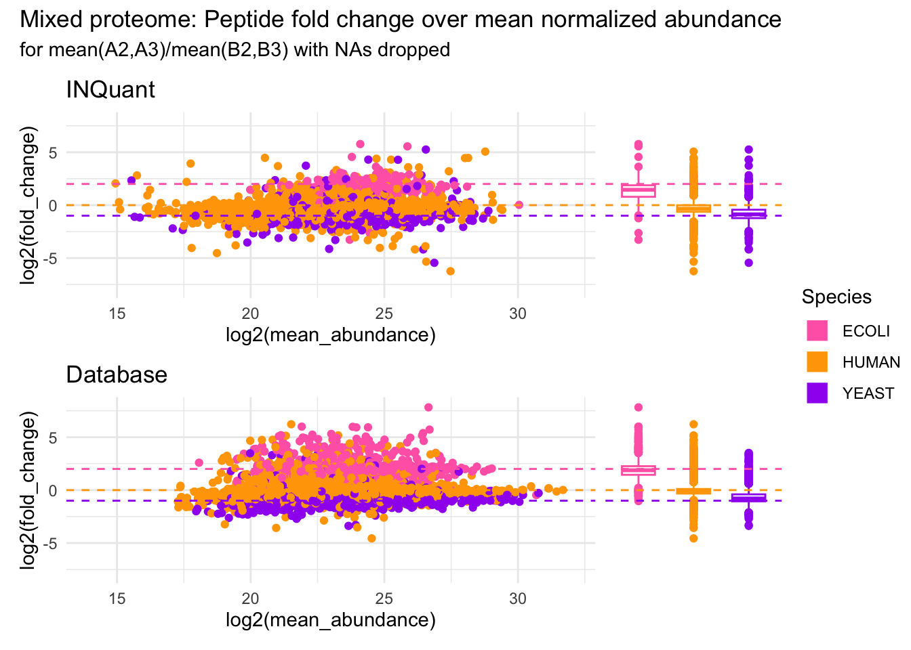
psms_only_MBR <- mixed_MBR_psms |>
filter(is.na(conf)) |>
pull(sequence) |>
unique()
mixed_only_MBR_peptides <- mixed_MBR_peptide |>
mutate(species = mixed_fasta$species
[match(str_split_i(principal_protein,';',1),
mixed_fasta$accession)]) |>
filter(sequence %in% psms_only_MBR)
mixed_peptide_fold_change_only_MBR <-
plot_fold_change_mixed_proteome(table = mixed_only_MBR_peptides,
custom_title = 'Only MBR',
abundance_pattern = 'abundance_(.*)_normalized',
type = 'Peptide',
xlims = custom_xlims)
mixed_peptide_fold_change_MBR <-
plot_fold_change_mixed_proteome(table = mixed_MBR_peptide |>
mutate(species = mixed_fasta$species
[match(str_split_i(principal_protein,';',1),
mixed_fasta$accession)]),
custom_title = 'With MBR',
abundance_pattern = 'abundance_(.*)_normalized',
type = 'Peptide',
xlims = custom_xlims)
mixed_peptide_fold_change_no_MBR <-
plot_fold_change_mixed_proteome(table = mixed_peptide |>
mutate(species = mixed_fasta$species
[match(str_split_i(principal_protein,';',1),
mixed_fasta$accession)]),
custom_title = 'Without MBR',
abundance_pattern = 'abundance_(.*)_normalized',
type = 'Peptide',
xlims = custom_xlims)
mixed_peptide_fold_change_MBR_combined <-
(
(mixed_peptide_fold_change_no_MBR /
mixed_peptide_fold_change_MBR /
mixed_peptide_fold_change_only_MBR) +
plot_layout(1, 3, axis_titles = 'collect', guides = 'collect') +
plot_annotation(
title =
'Mixed proteome: Peptide fold change over mean normalized abundance',
subtitle =
'for mean(A2,A3)/mean(B2,B3) with NAs dropped')
)
save_fig(mixed_peptide_fold_change_MBR_combined,
'mixed_peptide_fold_change_combined.png',
h = 1440*2)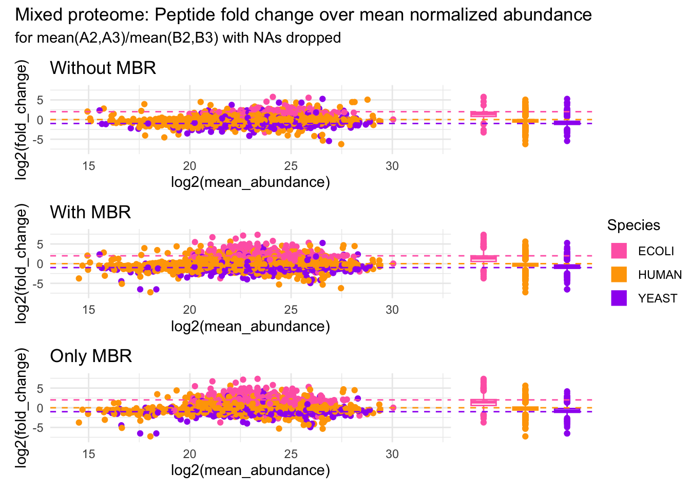
Peptide and protein log2 fold change
fold_change_peptide_inquant_empty_MBR <-
plot_fold_change_mixed_proteome(table = mixed_MBR_peptide |>
mutate(species = mixed_fasta$species
[match(str_split_i(principal_protein,';',1),
mixed_fasta$accession)]),
abundance_pattern = 'abundance_(.*)_normalized',
type = 'Peptide',
custom_title = 'Peptides',
xlims = custom_xlims)
fold_change_protein_inquant_empty_MBR <-
plot_fold_change_mixed_proteome(table = mixed_MBR_proteins |>
mutate(species = mixed_fasta$species
[match(principal_protein,
mixed_fasta$accession)]),
abundance_pattern = 'abundance_(.*)_normalized',
type = 'Protein',
custom_title = 'Proteins',
xlims = custom_xlims)
mixed_fold_change_combined_protein_peptide <- ((fold_change_peptide_inquant_empty_MBR / fold_change_protein_inquant_empty_MBR) +
plot_layout(1, 2, axis_titles = 'collect', guides = 'collect') +
plot_annotation(title =
'Mixed proteome: Fold change over mean normalized abundance',
subtitle = 'for INQuant (with MBR) mean(A2,A3)/mean(B2,B3) with NAs dropped'))save_fig(mixed_fold_change_combined_protein_peptide,
'mixed_fold_change_plot_peptide_vs_protein_combined.png',
h = 2500)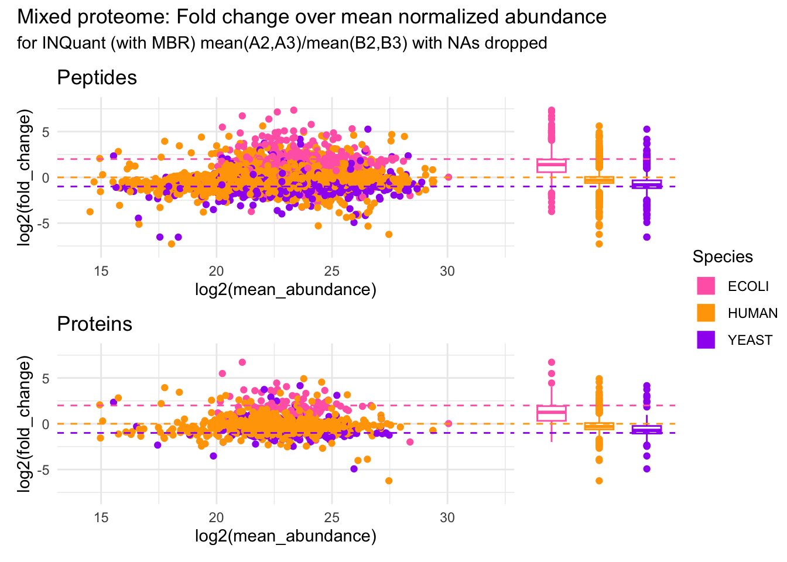
Abundance distribution for each species for INQuant and database search
mixed_species_distribution_no_NA <-
plot_species_distribution(
mixed_peptide |>
mutate(species = mixed_fasta$species
[match(str_split_i(principal_protein,';',1),
mixed_fasta$accession)]) |>
drop_na(species),
title = 'INQuant',
subtitle = '(only peptides \nmapping to protein)',
abundance_pattern = 'abundance_(.*)_normalized') +
theme(legend.position = 'none')
mixed_species_distribution <-
plot_species_distribution(
mixed_peptide |>
mutate(species = mixed_fasta$species
[match(str_split_i(principal_protein,';',1),
mixed_fasta$accession)]),
title = 'INQuant',
abundance_pattern = 'abundance_(.*)_normalized')
mixed_database_species_distribution <-
plot_species_distribution(
mixed_database_peptides |>
mutate(sequence = `Annotated Sequence`,
meas_mass = `Theo. MH+ [Da]`),
title = 'Database',
abundance_pattern =
'Abundances \\(Normalized\\): (.*): Sample, [AB]')
mixed_species_distribution_combined <-
(mixed_species_distribution +
mixed_species_distribution_no_NA +
mixed_database_species_distribution +
plot_layout(3, 1,
axis_titles = 'collect',
guides = 'collect') +
plot_annotation(
title =
'Mixed proteome: Peptide abundance percentage distribution',
subtitle =
'For each experiment, categorised by species, not including A1'
)
)save_fig(mixed_species_distribution_combined,
'mixed_database_inquant_species_distribution.png',
h = 1600)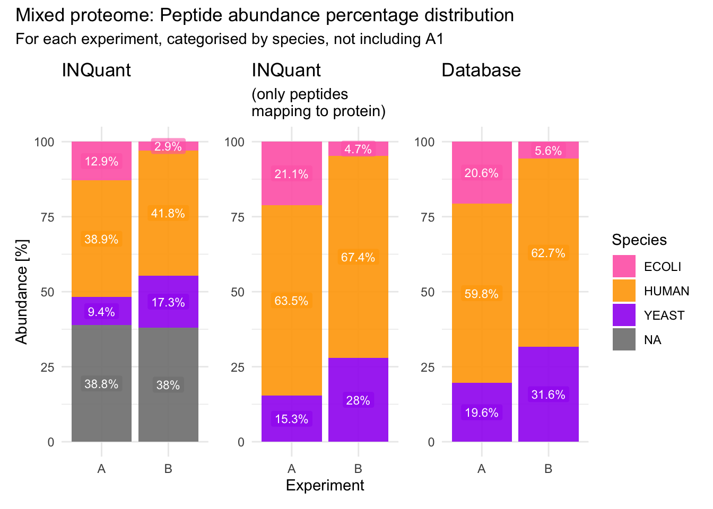
Identified peptides Venn diagram
Sequences get added ID’s to ensure that identical sequences, which are not identical in m/z are counted separately in the Venn diagram.
mixed_identified <- mixed_MBR_peptide |>
filter(!if_all(contains('abundance'), ~ is.na(.))) |>
mutate(sequence = str_c(sequence, "_", row_number()), .by = sequence) |>
pull(sequence)
mixed_database_identified <- mixed_database_peptides |>
filter(!if_all(contains('Abundance'), ~ is.na(.))) |>
mutate(Sequence = str_split_i(`Annotated Sequence`,'\\.',2)) |>
mutate(Sequence = str_replace_all(Sequence, 'I','L')) |>
mutate(sequence = str_c(Sequence, "_", row_number()), .by = Sequence) |>
pull(sequence)
mixed_venn <- plot_venn_diagram('INQuant', 'Database',
mixed_identified,
mixed_database_identified) +
plot_annotation(title = 'Quantified peptides in the mixed proteome experiment',
subtitle = 'With Database I´s replaced by L´s',
theme = theme(plot.title = element_text(hjust = 0.5),
plot.subtitle = element_text(hjust = 0.5)))save_fig(mixed_venn, 'mixed_venn_identified_peptides.png',
w = 1600,
h = 1600)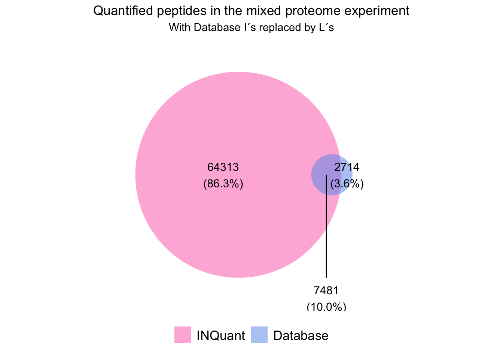
Average amount of quantification values per peptide
mixed_identified_per_peptide <-
mixed_MBR_peptide |>
filter(!if_all(contains('abundance'), ~ is.na(.))) |>
select(sequence, contains('abundance') & !contains('normalized')) |>
rowwise() |>
mutate(amount_quant = sum(!is.na(c_across(contains("abundance"))))) |>
select(sequence, amount_quant, contains('abundance'))
mixed_database_identified_per_peptide <- mixed_database_peptides |>
filter(!if_all(contains('Abundance'), ~ is.na(.))) |>
mutate(Sequence = str_split_i(`Annotated Sequence`,'\\.',2)) |>
select(Sequence, contains('Abundance:')) |>
rowwise() |>
mutate(amount_quant = sum(!is.na(c_across(contains("Abundance"))))) |>
select(Sequence, amount_quant, contains('abundance'))cat(str_c("Mean amount of quantification values per peptide\nINQuant: ",
mean(mixed_identified_per_peptide$amount_quant),
"\nDatabase: ",
mean(mixed_database_identified_per_peptide$amount_quant)))Mean amount of quantification values per peptide
INQuant: 1.42896342312728
Database: 4.85345757724375INQuant and database search protein identification Venn diagram
mixed_inquant_proteins_identified <- mixed_MBR_proteins |>
pull(principal_protein)
mixed_database_proteins_identified <- mixed_database_proteins |>
pull(Accession)
mixed_venn_proteins <- plot_venn_diagram('INQuant',
'Database',
mixed_inquant_proteins_identified,
mixed_database_proteins_identified) +
plot_annotation(title = 'Indentified proteins in the mixed proteome experiment',
theme = theme(plot.title = element_text(hjust = 0.5),
plot.subtitle = element_text(hjust = 0.5)))save_fig(mixed_venn_proteins,
'mixed_venn_identified_proteins.png',
w = 1600,
h = 1600)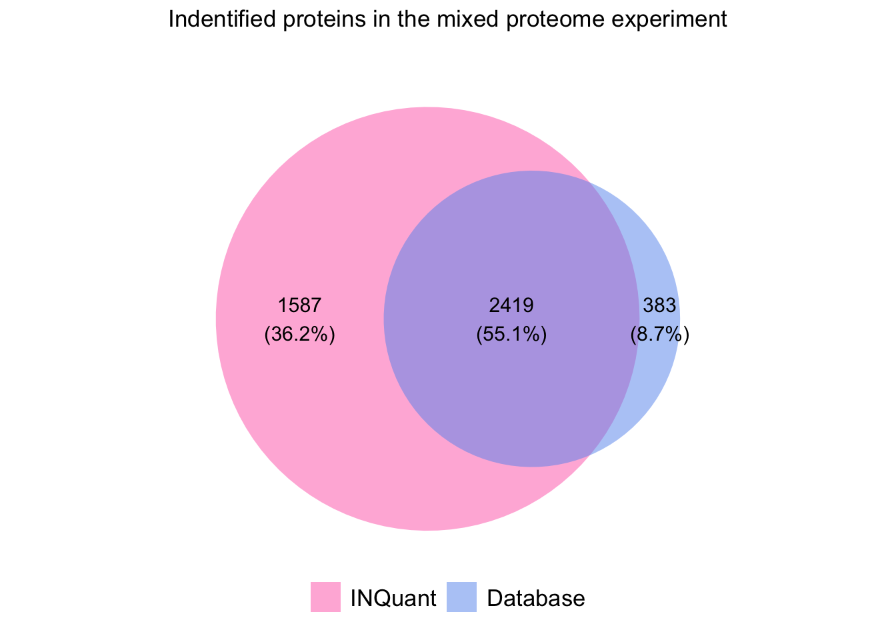
The GluC experiment
Density scatter plot for calibration
plot_meas_rt <- plot_density_point(gluc_calibrated_preds, "rt", "Measured", 7)
plot_cali_rt <- plot_density_point(gluc_calibrated_preds, "rt", "Calibrated", 7)
plot_meas_mz <- plot_density_point(gluc_calibrated_preds, "mz", "Measured", 7)
plot_cali_mz <- plot_density_point(gluc_calibrated_preds, "mz", "Calibrated", 7)
calibration_scatter_error_plot <-
(plot_meas_rt +
plot_cali_rt +
plot_meas_mz +
plot_cali_mz) +
plot_layout(ncol = 2, guides = "collect") +
plot_annotation(title = "Calibration density plots",
theme = theme(plot.title = element_text(hjust = 0.5),
legend.position = "bottom"))save_fig(calibration_scatter_error_plot,
"calibration_scatter_error_plot.png")`geom_smooth()` using formula = 'y ~ x'
`geom_smooth()` using formula = 'y ~ x'
`geom_smooth()` using formula = 'y ~ x'
`geom_smooth()` using formula = 'y ~ x'
`geom_smooth()` using formula = 'y ~ x'
`geom_smooth()` using formula = 'y ~ x'
`geom_smooth()` using formula = 'y ~ x'
`geom_smooth()` using formula = 'y ~ x'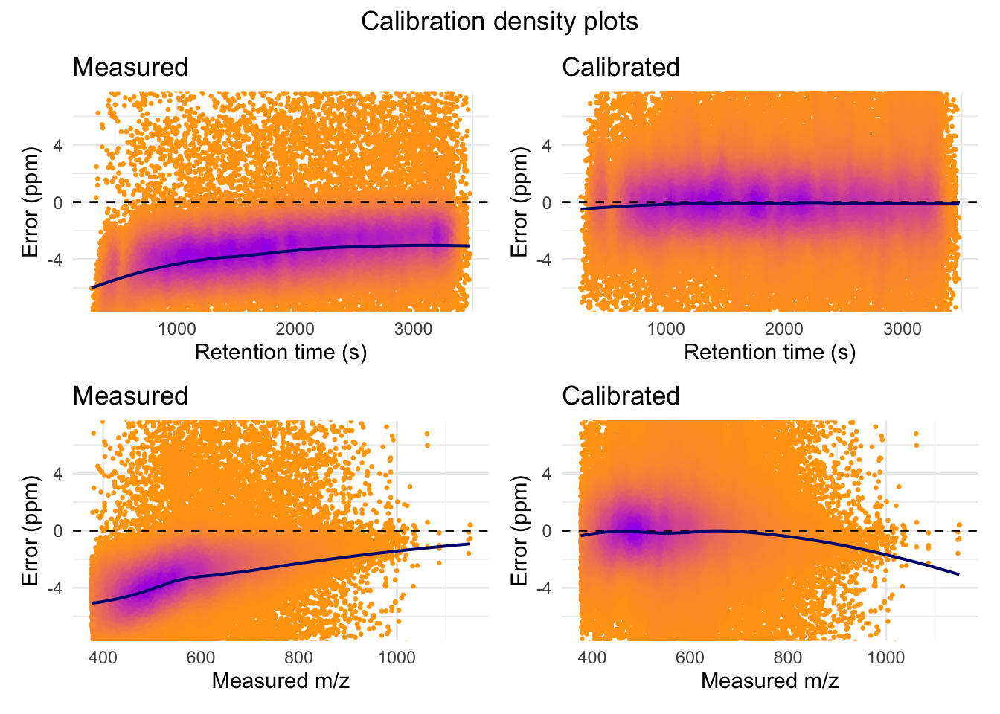
Density graph
density_cali <- plot_density_calibration(gluc_calibrated_preds, calibrated = TRUE)
density_not_cali <- plot_density_calibration(gluc_calibrated_preds, calibrated = FALSE)
save_fig(
(density_not_cali + theme(legend.position = "none")) /
(density_cali + theme(legend.position = "bottom")),
"calibration_density_error_plot_cali.png",
w = 1920/2
)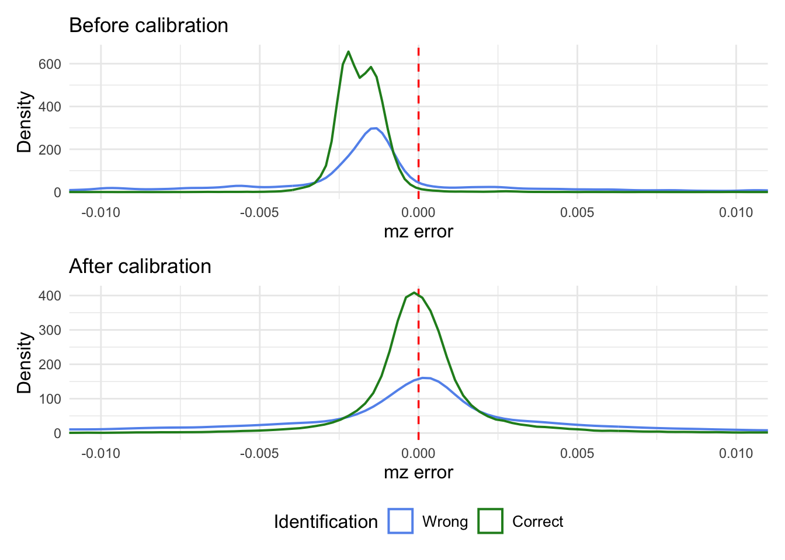
Calibration m/z error boxplot
boxplot_cali_outliers <- plot_boxplot_calibration(gluc_calibrated_preds,
outliers = TRUE)
save_fig(boxplot_cali_outliers,
"calibration_boxplot.png",
w = 1920/2)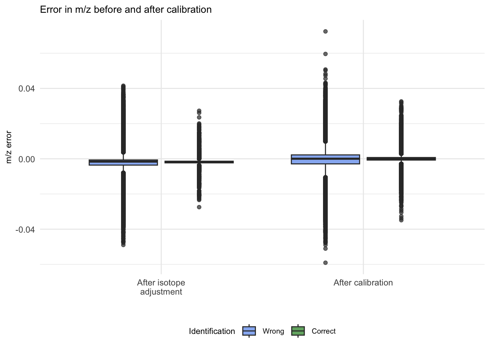
Distribution of C-terminal amino acids
gluc_cleavage_distribution <-
plot_c_term_AA_distribution(gluc_peptides,
'INQuant',
'abundance_(.*)')
gluc_database_cleavage_distribution <-
plot_c_term_AA_distribution(
gluc_database_peptides |>
mutate(sequence = Sequence),
'Database',
'Abundances \\(Normalized\\): (.*): Sample')
gluc_cleavage_combined <-
(gluc_cleavage_distribution + gluc_database_cleavage_distribution +
plot_layout(2,1,axis_titles = 'collect', guides = 'collect') +
plot_annotation(
title =
'GluC: Peptide abundance percentage distribution for each experiment',
subtitle =
'Categorised by C-terminal amino acid')
)save_fig(gluc_cleavage_combined,
'GluC_database_inquant_C_term_cleavage_distribution.png',
h = 1600)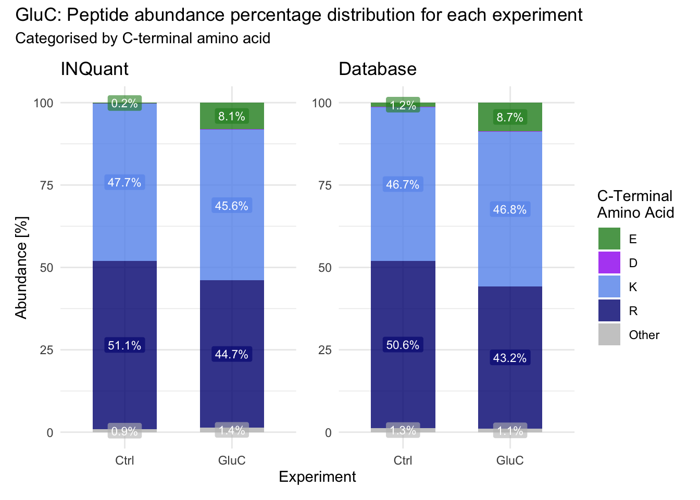
Comparing MBR and non-MBR abundances
save_fig(plot_bar_MBR_count(gluc_MBR_psms, 'GluC'),
'gluc_MBR_bar_plot.png',
h = 1340)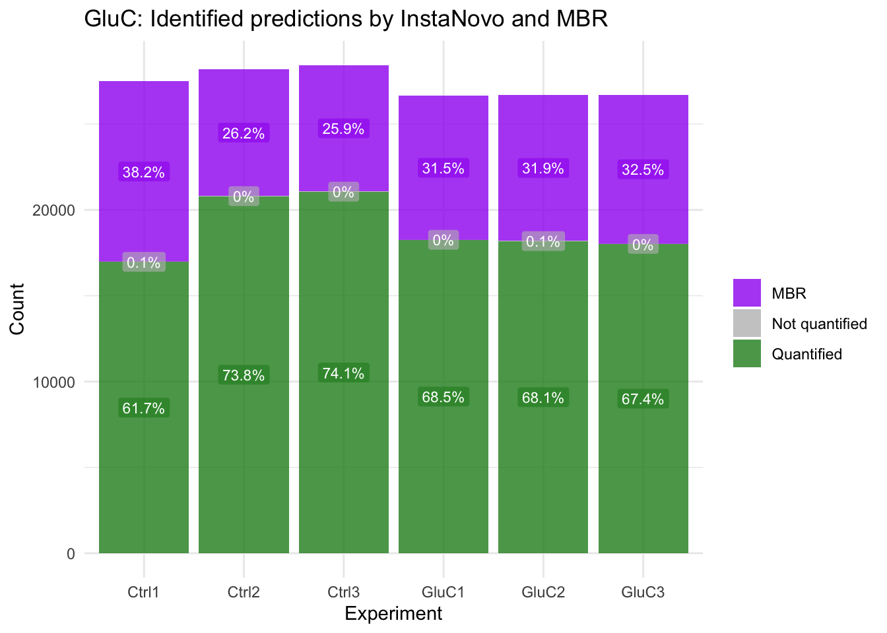
Identified quantification values distribution
gluc_quant_amount <- full_join(gluc_peptides |>
select(sequence, contains('abundance')) |>
mutate(quantified = !if_all(contains('abundance'), is.na)) |>
mutate(sequence = str_c(sequence, "_", row_number()), .by = sequence) |>
select(sequence, quantified),
gluc_database_peptides |>
select(`Sequence`,
contains('ormalized')) |>
mutate(sequence = str_replace_all(Sequence, 'I','L'),
quantified = !if_all(contains('Abundance'), is.na)) |>
mutate(sequence = str_c(sequence, "_", row_number()), .by = sequence) |>
select(sequence, quantified),
suffix = c('_INQuant', '_Database'),
by = join_by(sequence)) |>
pivot_longer(contains('quant'),
names_to = 'type',
values_to = 'quantified',
names_prefix = 'quantified_') |>
mutate(quantified = ifelse(quantified == 'TRUE', 'Quantified', 'Not quantified')) |>
mutate(quantified = replace_na(quantified, 'Not identified')) |>
count(type, quantified) |>
group_by(type) |>
mutate(percentage = n / sum(n),
label = str_c(round(percentage*100, digits = 1),'% \n(',n,')')) |>
ungroup() |>
ggplot(aes(x = type, y = percentage, fill = quantified)) +
geom_col(width = 0.8, alpha = 0.8) +
geom_label(aes(label = label),
position = position_fill(vjust = 0.5),
alpha = 0.6,
label.size = 0,
size = 3,
color = "white",
show.legend = FALSE) +
scale_fill_manual(values = c('Quantified' = inq_blue,
'Not quantified' = inq_pink,
'Not identified' = 'grey')) +
coord_flip() +
theme_minimal() +
scale_y_continuous(labels = scales::percent_format()) +
labs(title = 'GluC: All identified peptides',
subtitle = 'Categorised by whether or not they have quantification values',
fill = '',
x = '',
y = '')
save_fig(gluc_quant_amount,
'GluC_amount_quantified_database_vs_INQuant.png',
h = 1200,
w = 2300)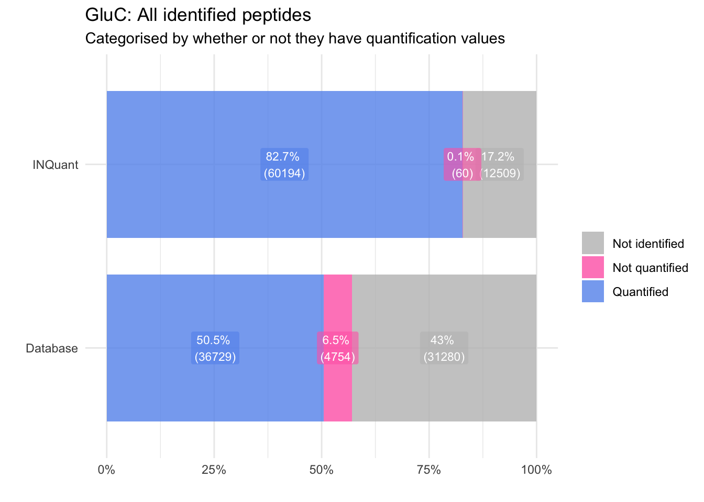
Identified peptides Venn diagram
gluc_identified <- gluc_MBR_peptides |>
filter(!if_all(contains('abundance'), ~ is.na(.))) |>
mutate(sequence = str_c(sequence, "_", row_number()), .by = sequence) |>
pull(sequence)
gluc_database_identified <- gluc_database_peptides |>
filter(!if_all(contains('Abundance'), ~ is.na(.))) |>
mutate(Sequence = str_replace_all(Sequence, 'I','L')) |>
mutate(sequence = str_c(Sequence, "_", row_number()), .by = Sequence) |>
pull(sequence)
gluc_venn <- plot_venn_diagram('INQuant', 'Database',
gluc_identified,
gluc_database_identified) +
plot_annotation(title = 'Quantified peptides in the GluC experiment',
subtitle = 'With Database I´s replaced by L´s',
theme = theme(plot.title = element_text(hjust = 0.5),
plot.subtitle = element_text(hjust = 0.5)))save_fig(gluc_venn, 'GluC_venn_identified_peptides.png',
w = 1600,
h = 1600)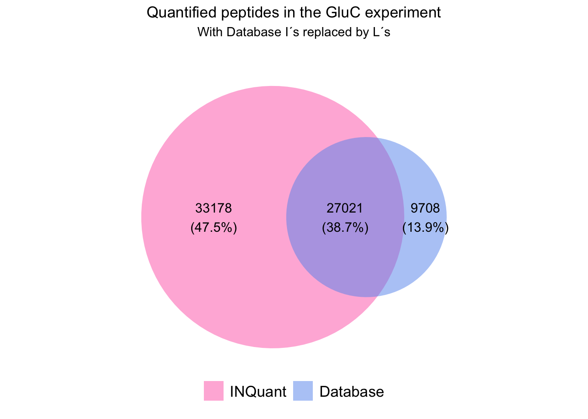
Fold change boxplots
gluc_fold_change_inquant_data_with_MBR <- gluc_MBR_proteins |>
select(!matches('abundance_(Ctrl\\d|GluC\\d)$')) |>
pivot_longer(cols = contains('abundance'),
names_to = c("experiment"),
names_pattern = "abundance_(.*)\\d_normalized",
values_to = "abundance_normalized") |>
drop_na(abundance_normalized) |>
group_by(principal_protein, experiment) |>
summarise(mean_abundance_normalized = mean(abundance_normalized), .groups = 'drop') |>
pivot_wider(names_from = experiment,
values_from = mean_abundance_normalized) |>
drop_na() |>
mutate(fold_change = Ctrl / GluC,
origin = "INQuant (with MBR)") |>
select(fold_change, origin)
gluc_fold_change_inquant_data_without_MBR <- gluc_proteins |>
select(!matches('abundance_(Ctrl\\d|GluC\\d)$')) |>
pivot_longer(cols = contains('abundance'),
names_to = c("experiment"),
names_pattern = "abundance_(.*)\\d_normalized",
values_to = "abundance_normalized") |>
drop_na(abundance_normalized) |>
group_by(principal_protein, experiment) |>
summarise(mean_abundance_normalized = mean(abundance_normalized), .groups = 'drop') |>
pivot_wider(names_from = experiment,
values_from = mean_abundance_normalized) |>
drop_na() |>
mutate(fold_change = Ctrl / GluC,
origin = "INQuant (without MBR)") |>
select(fold_change, origin)
gluc_fold_change_database_data <- gluc_database_proteins |>
select(!contains('Abundance:') & !contains('Scaled')) |>
pivot_longer(cols = contains('Abundances'),
names_to = c("experiment"),
names_pattern = "Abundances \\(Normalized\\): (.*)\\d: Sample",
values_to = "abundance_normalized") |>
drop_na(abundance_normalized) |>
group_by(Accession, experiment) |>
summarise(mean_abundance_normalized = mean(abundance_normalized), .groups = 'drop') |>
pivot_wider(names_from = experiment,
values_from = mean_abundance_normalized) |>
drop_na() |>
mutate(fold_change = Ctrl / GluC,
origin = "Database") |>
select(fold_change, origin)
gluc_fold_change_boxplot <-
bind_rows(gluc_fold_change_inquant_data_with_MBR,
gluc_fold_change_database_data) |>
mutate(
log2_fc = log2(fold_change),
origin = factor(origin, levels = c("INQuant (with MBR)",
"Database"))
) |>
ggplot(aes(x = origin, y = log2_fc, fill = origin)) +
geom_boxplot(alpha = 0.8, outlier.alpha = 0.6) +
scale_fill_manual(
values = c("INQuant (with MBR)" = inq_pink, "Database" = inq_blue)
) +
geom_hline(aes(yintercept = 0),
linetype = 'dashed',
color = inq_purple,
show.legend = FALSE) +
labs(
y = "log2(fold change)",
x = NULL,
fill = "Data origin",
title = "GluC: Log2 fold change of normalized protein abundance"
) +
theme_minimal() +
theme(legend.position = "none",
legend.direction = "horizontal",
title = element_text(size = 10))
save_fig(gluc_fold_change_boxplot, 'gluc_fold_change_boxplot.png', w = 1920*4/5)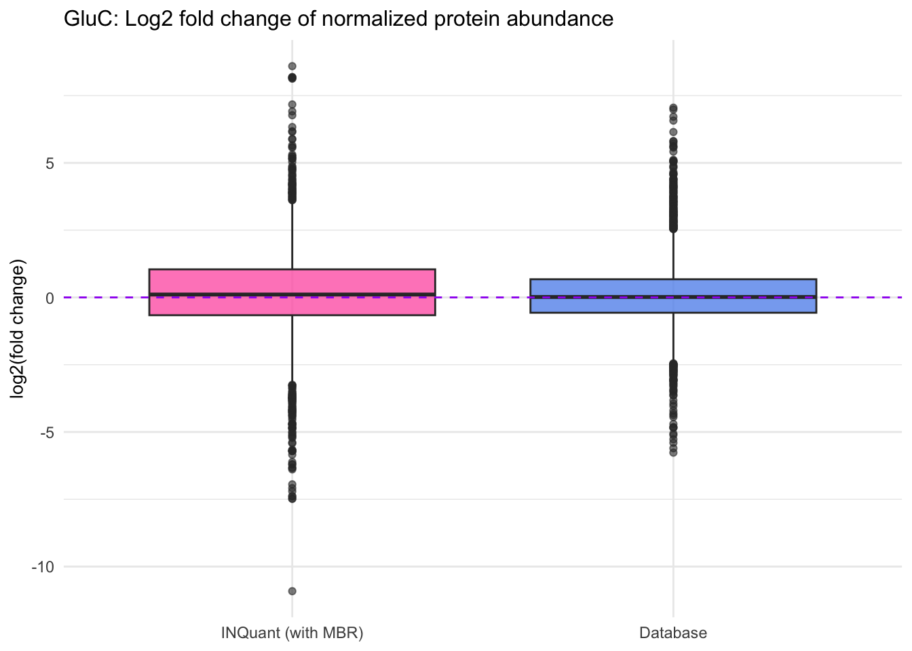
gluc_fold_change_boxplot_MBR_diff <-
bind_rows(gluc_fold_change_inquant_data_with_MBR,
gluc_fold_change_inquant_data_without_MBR,
gluc_fold_change_database_data) |>
mutate(
log2_fc = log2(fold_change),
origin = factor(origin, levels = c("INQuant (without MBR)",
"INQuant (with MBR)",
"Database"))
) |>
ggplot(aes(x = origin, y = log2_fc, fill = origin)) + # Explicit x = origin for clarity
geom_boxplot(alpha = 0.8, outlier.alpha = 0.6) +
scale_fill_manual(
values = c("INQuant (with MBR)" = inq_pink,
"INQuant (without MBR)" = inq_orange,
"Database" = inq_blue)
) +
geom_hline(aes(yintercept = 0),
linetype = 'dashed',
color = inq_purple,
show.legend = FALSE) +
labs(
y = "log2(fold_change)",
x = NULL,
fill = "Data origin",
title = "GluC: Log2 fold change of normalized protein abundance",
subtitle = "For both INQuant and Database search data"
) +
theme_minimal()
save_fig(gluc_fold_change_boxplot_MBR_diff, 'gluc_fold_change_boxplot_MBR_diff.png')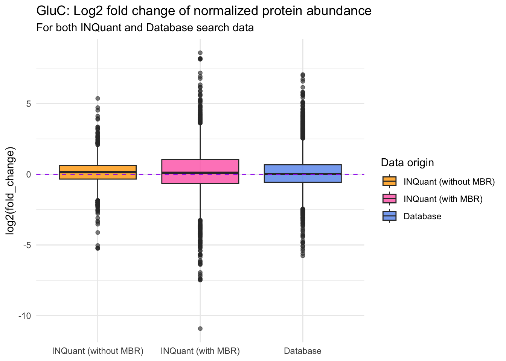
save_fig(gluc_fold_change_boxplot_MBR_diff +
coord_cartesian(ylim = c(-1,1)), 'gluc_fold_change_boxplot_MBR_diff_zoomed.png')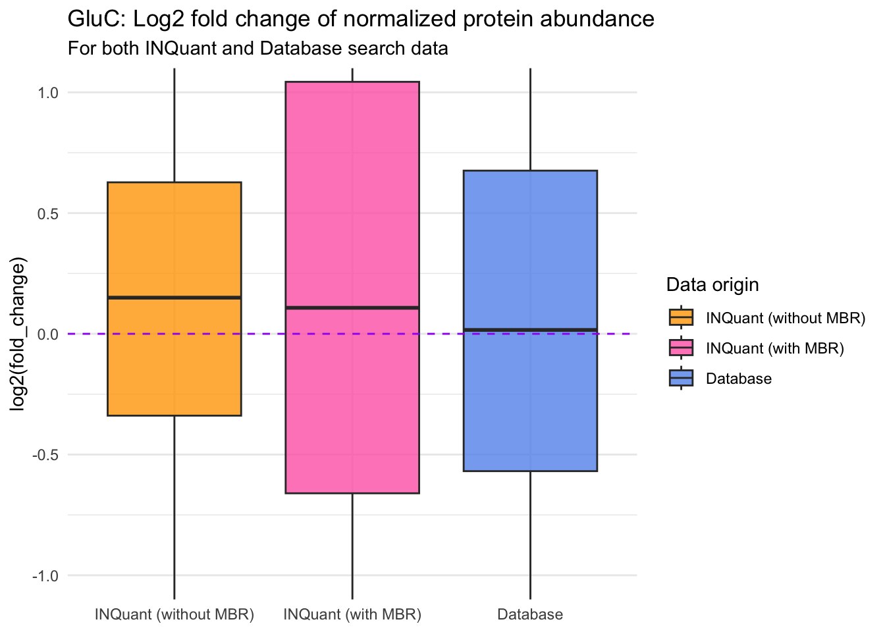
High confidence peptides without alignment to proteins
cat(str_c('Number of peptides with a confidence ≥95%: ',
gluc_MBR_peptides |>
filter(protein_matches == '') |>
mutate(conf_perc = 10**conf*100) |>
filter(conf_perc >= 0.95) |>
count() |>
pull()
))Number of peptides with a confidence ≥95%: 9359Identified proteins venn diagram
gluc_inquant_proteins_identified <- gluc_MBR_proteins |>
pull(principal_protein)
gluc_database_proteins_identified <- gluc_database_proteins |>
pull(Accession)
gluc_venn_proteins <-
plot_venn_diagram('INQuant',
'Database',
gluc_inquant_proteins_identified,
gluc_database_proteins_identified) +
plot_annotation(title = 'Indentified proteins in the GluC experiment',
theme = theme(plot.title = element_text(hjust = 0.5),
plot.subtitle = element_text(hjust = 0.5)))save_fig(gluc_venn_proteins, 'gluc_venn_identified_proteins.png',
w = 1600,
h = 1600)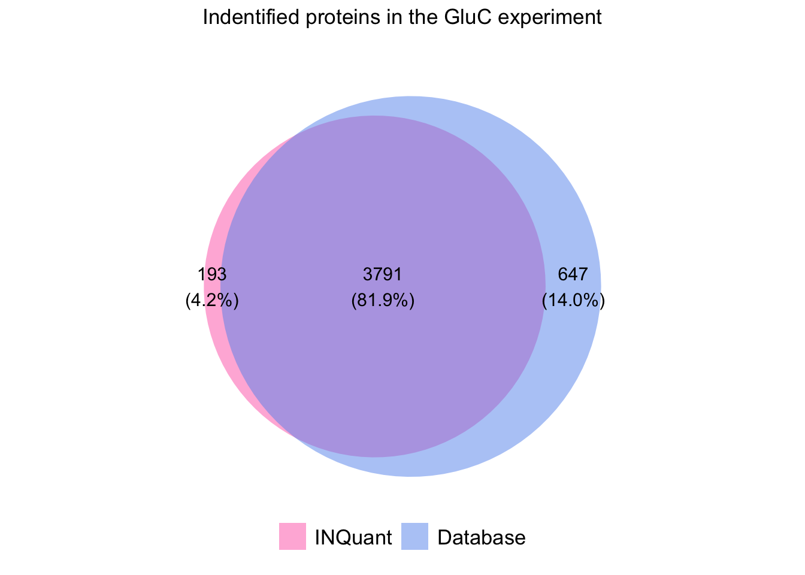
Amount of correct and wrong predictions before and after recalibration
combined_calibrated_preds <- gluc_calibrated_preds |>
full_join(gluc_recalibrated_preds, by = c("file", "scan_number")) |>
filter(!is.na(target)) |>
mutate(best = ifelse(target == preds,
ifelse(target == preds_cali, "both", "preds"),
ifelse(target == preds_cali, "cali", "none")),
best = ifelse(is.na(best),
ifelse(is.na(preds),
ifelse(is.na(preds_cali), "none",
ifelse(target == preds_cali, "cali", "none")),
ifelse(is.na(preds_cali),
ifelse(target == preds, "preds", "none"),
best)),
best)) |>
select(!global_index, !correct)Before recalibration
combined_calibrated_preds |>
filter(!is.na(target)) |>
mutate('Prediction type' = ifelse(best == "both" | best == "preds", 'Correct', 'Wrong')) |>
group_by(`Prediction type`) |>
summarise(Peptides = n(),
'Mean confidence' = mean(probs_cali)) # A tibble: 2 × 3
`Prediction type` Peptides `Mean confidence`
<chr> <int> <dbl>
1 Correct 78767 0.766
2 Wrong 34606 0.104After recalibration
combined_calibrated_preds |>
filter(!is.na(target)) |>
mutate('Prediction type' = ifelse(best == "both" | best == "cali", 'Correct', 'Wrong')) |>
group_by(`Prediction type`) |>
summarise(Peptides = n(),
'Mean confidence' = mean(probs_cali)) # A tibble: 2 × 3
`Prediction type` Peptides `Mean confidence`
<chr> <int> <dbl>
1 Correct 78015 0.773
2 Wrong 35358 0.102Venn diagram before and after calibration
gluc_identified_before <- combined_calibrated_preds |>
filter(target == preds) |>
mutate(target_scan = str_c(target, scan_number)) |>
pull(target_scan)
gluc_identified_after <- combined_calibrated_preds |>
filter(target == preds_cali) |>
mutate(target_scan = str_c(target, scan_number)) |>
pull(target_scan)
gluc_venn <- plot_venn_diagram('Before calibration', 'After calibration',
gluc_identified_before,
gluc_identified_after) +
plot_annotation(title = 'Correctly identified peptides in the GluC experiment',
subtitle = 'Before and after calibration',
theme = theme(plot.title = element_text(hjust = 0.5),
plot.subtitle = element_text(hjust = 0.5)))
save_fig(gluc_venn, 'GluC_venn_calibration_identified_sequences.png',
w = 1600,
h = 1600)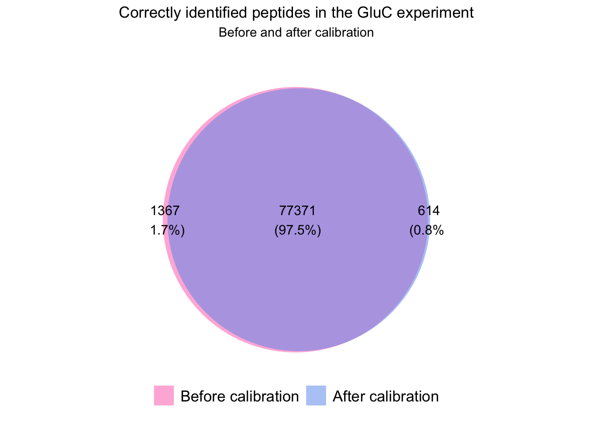
NPv3
Boxplot for protein abundances
npv3_boxplot <- NPv3_MBR_proteins |>
mutate(protein_type = ifelse(str_detect(principal_protein,'^B_fig'),
'Native',
ifelse(str_detect(principal_protein, '^P'),
'Phage', 'Anti-viral'))) |>
select(!matches('abundance_.*\\d$')) |>
pivot_longer(contains('abundance'),
names_to = 'experiment',
names_pattern = 'abundance\\_(.*)_normalized',
values_to = 'abundance') |>
mutate(experiment = ifelse(experiment == '40', '40_rep1',
ifelse(experiment == 5, '05', experiment))) |>
drop_na(abundance) |>
ggplot() +
geom_boxplot(aes(y = abundance, x = experiment, fill = protein_type),
outliers=FALSE,
alpha = 0.7) +
scale_fill_manual(values = c('Anti-viral' = inq_purple,
'Native' = inq_dark_blue,
'Phage' = inq_orange
)) +
theme_minimal() +
labs(title = 'NPv3: Protein quantification for types of proteins with MBR',
x = 'Experiment timestamp',
y = 'Abundance',
fill = 'Protein type')
save_fig(npv3_boxplot, 'NPv3_boxplot.png', h = 1440*0.6)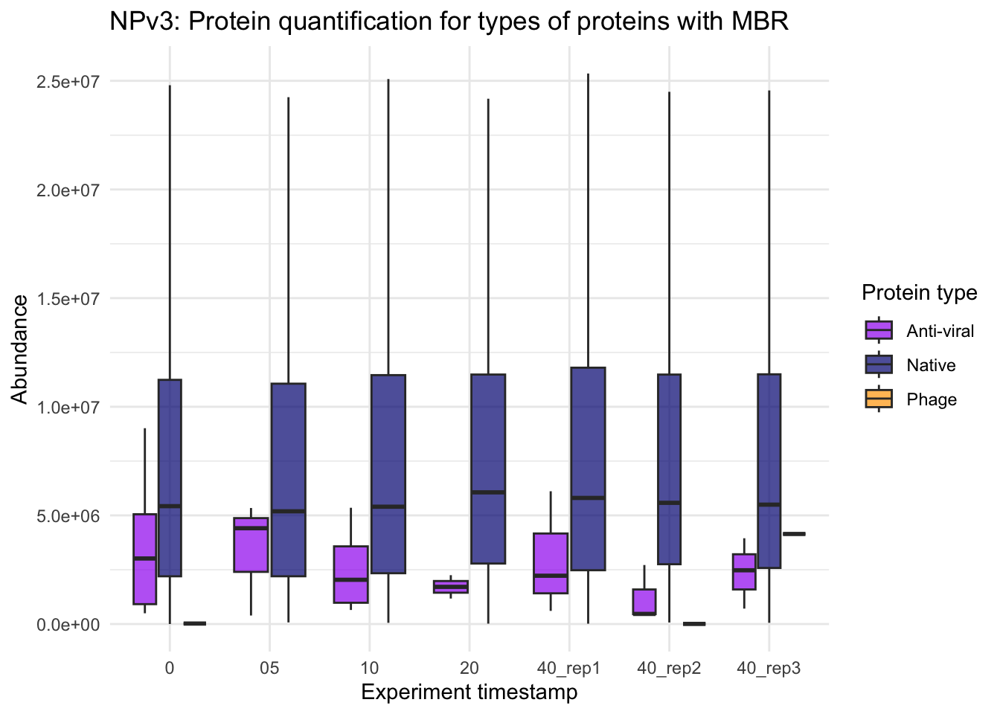
NPv3_MBR_peptide |>
filter(str_detect(protein_matches, 'P_')) |>
summarise(Count = n(),
PSMs = sum(no_psms)) Count PSMs
1 9 45Protein inference, plot group for specific protein
protein_group <- plot_groups(ungrouped_protein_table = NPv3_MBR_proteins_ungrouped,
protein_group_table = NPv3_MBR_proteins,
selected_protein = "P_ID000365",
show_protein_names = TRUE)
save_fig(protein_group, 'NPv3_protein_group.png',
w = 1920*4/5)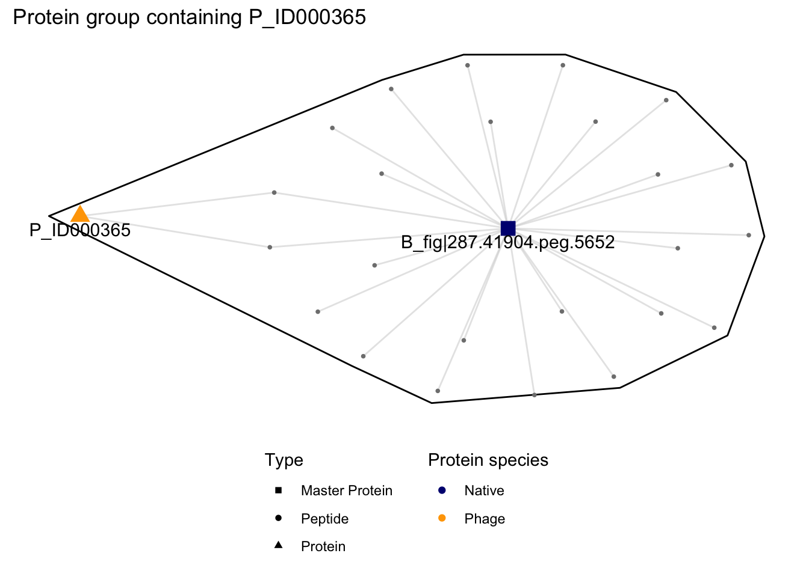
B_fig_peptide <- NPv3_MBR_proteins |>
filter(principal_protein == 'B_fig|287.41904.peg.5652') |>
select(peptide_seqs) |>
str_split(';') |>
as_vector()
npv3_peptide_abund <- NPv3_MBR_peptide |>
filter(sequence %in% B_fig_peptide) |>
mutate(protein_type = case_when(
str_detect(principal_protein, '^B_fig') ~ 'Native',
str_detect(principal_protein, '^P') ~ 'Phage',
TRUE ~ 'Anti-viral'
)) |>
select(!matches('abundance_.*\\d$')) |>
mutate(phage = str_detect(protein_matches, 'P_')) |>
pivot_longer(contains('abundance'),
names_to = 'experiment',
names_pattern = 'abundance\\_(.*)_normalized',
values_to = 'abundance') |>
drop_na(abundance) |>
mutate(experiment = case_when(
experiment == '40' ~ '40_rep1',
experiment == '5' ~ '05',
TRUE ~ experiment
)) |>
drop_na(abundance) |>
arrange(phage) |>
ggplot(aes(y = abundance, x = experiment, color = phage, shape = phage)) +
geom_line(aes(group = seq_modifications)) +
geom_point(aes(size = phage)) +
scale_color_manual(values = c("TRUE" = inq_orange, "FALSE" = inq_dark_blue),
labels = c("TRUE" = "Mapped to phage", "FALSE" = "Only mapped to native"),
guide = "legend") +
scale_shape_manual(values = c(16, 17),
labels = c("TRUE" = "Mapped to phage", "FALSE" = "Only mapped to native"),
guide = "legend") +
scale_size_manual(values = c("TRUE" = 3, "FALSE" = 2),
labels = c("TRUE" = "Mapped to phage", "FALSE" = "Only mapped to native"),
guide = "legend") +
labs(
title = "Abundance distribution across experiments",
subtitle = "for peptides mapped to B_fig|287.41904.peg.5652",
x = "Experiment",
y = "Abundance",
color = "Protein Mapping",
shape = "Protein Mapping",
size = "Protein Mapping"
) +
theme_minimal() +
theme(
legend.position = 'right',
legend.text = element_text(size = 8),
legend.title = element_text(size = 9),
plot.title = element_text(size = 12),
plot.subtitle = element_text(size = 11),
axis.title = element_text(size = 9),
)
save_fig(npv3_peptide_abund, 'NPv3_peptide_abundance.png',
h = 1440*0.55)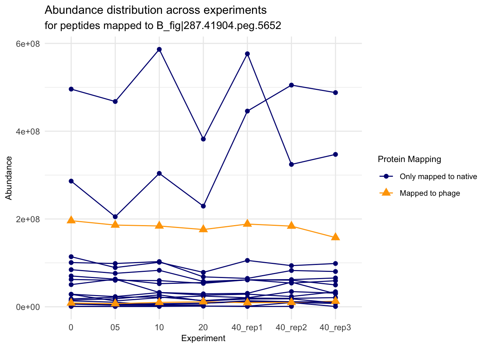
NPv3_MBR_peptide |>
filter(str_detect(principal_protein, '^P_')) |>
select(sequence, protein_matches, conf) |>
mutate(conf_perc = 10**conf) sequence protein_matches conf conf_perc
1 DALLLDK P_ID000348 -6.723500 1.890167e-07
2 LLTELER P_ID000096 -4.479451 3.315502e-05
3 NSSELLR P_ID000373 -8.640188 2.289875e-09T-tests for MBR
GluC
gluc_paired_mean_abundances <- gluc_MBR_psms |>
mutate(meas_mass = round(meas_mass, digits = 2),
MBR = is.na(conf),
file_id = str_extract(file_id, '\\D*')) |>
group_by(sequence, meas_mass, MBR, file_id) |>
summarise(mean_abundance = mean(abundance, na.rm = TRUE), .groups = 'drop') |>
pivot_wider(names_from = MBR,
names_prefix = 'mean_abundance_MBR_',
values_from = mean_abundance) |>
drop_na()
t.test(x = gluc_paired_mean_abundances$mean_abundance_MBR_FALSE,
y = gluc_paired_mean_abundances$mean_abundance_MBR_TRUE,
paired = TRUE)
Paired t-test
data: gluc_paired_mean_abundances$mean_abundance_MBR_FALSE and gluc_paired_mean_abundances$mean_abundance_MBR_TRUE
t = 0.027277, df = 12813, p-value = 0.9782
alternative hypothesis: true mean difference is not equal to 0
95 percent confidence interval:
-2873120 2954212
sample estimates:
mean difference
40545.95 Mixed proteome
mixed_paired_mean_abundances <- mixed_MBR_psms |>
filter(file_id != 'A1') |>
mutate(meas_mass = round(meas_mass, digits = 2),
MBR = is.na(conf),
file_id = str_extract(file_id, '\\D*')) |>
group_by(sequence, meas_mass, MBR, file_id) |>
summarise(mean_abundance = mean(abundance, na.rm = TRUE), .groups = 'keep') |>
pivot_wider(names_from = MBR,
names_prefix = 'mean_abundance_MBR_',
values_from = mean_abundance) |>
drop_na()
t.test(x = mixed_paired_mean_abundances$mean_abundance_MBR_FALSE,
y = mixed_paired_mean_abundances$mean_abundance_MBR_TRUE,
paired = TRUE)
Paired t-test
data: mixed_paired_mean_abundances$mean_abundance_MBR_FALSE and mixed_paired_mean_abundances$mean_abundance_MBR_TRUE
t = -2.8903, df = 2413, p-value = 0.003883
alternative hypothesis: true mean difference is not equal to 0
95 percent confidence interval:
-3899269.3 -747009.1
sample estimates:
mean difference
-2323139 NPv3
NPv3_paired_mean_abundances <- NPv3_MBR_psms |>
filter(str_detect(file_id, '40')) |>
mutate(meas_mass = round(meas_mass, digits = 2),
MBR = is.na(conf)) |>
group_by(sequence, meas_mass, MBR) |>
summarise(mean_abundance = mean(abundance, na.rm = TRUE), .groups = 'drop') |>
pivot_wider(names_from = MBR,
names_prefix = 'mean_abundance_MBR_',
values_from = mean_abundance) |>
drop_na()
t.test(x = NPv3_paired_mean_abundances$mean_abundance_MBR_FALSE,
y = NPv3_paired_mean_abundances$mean_abundance_MBR_TRUE,
paired = TRUE)
Paired t-test
data: NPv3_paired_mean_abundances$mean_abundance_MBR_FALSE and NPv3_paired_mean_abundances$mean_abundance_MBR_TRUE
t = -3.873, df = 1925, p-value = 0.0001111
alternative hypothesis: true mean difference is not equal to 0
95 percent confidence interval:
-5978127 -1958944
sample estimates:
mean difference
-3968535 Average confidences
combined_conf <- bind_rows(
tibble(exp = 'GluC', conf = gluc_psms$conf),
tibble(exp = 'Mixed proteome', conf = mixed_psms$conf),
tibble(exp = 'NPv3', conf = NPv3_psms$conf)) |>
drop_na() |>
mutate(conf = 10**conf)
conf_medians <- combined_conf |>
group_by(exp) |>
summarise(median = median(conf))
combined_conf_plot <-
ggplot(combined_conf, aes(x = exp, y = conf, fill = exp, color = exp)) +
geom_half_violin(
aes(group = exp),
side = "r",
alpha = 0.6,
scale = 'width',
) +
geom_boxplot(
outlier.shape = 21,
outlier.alpha = 0.5,
outlier.size = 2,
staplewidth = 0.3,
size = .9,
alpha = 0.6,
width = 0.3,
position = position_nudge(x = -0.2)
) +
geom_label(data = conf_medians,
aes(x = exp,
y = median,
label = format(median, digits = 1, scientific = FALSE), fill = exp),
size = 3,
nudge_x = -0.3,
nudge_y = 0.05,
color = 'white',
label.size = 0,
inherit.aes = FALSE) +
scale_fill_manual(values = c(GluC = inq_dark_blue,
'Mixed proteome' = inq_purple,
NPv3 = inq_blue)) +
scale_color_manual(values = c(GluC = inq_dark_blue,
'Mixed proteome' = inq_purple,
NPv3 = inq_blue)) +
labs(title = 'Distribution of confidences for PSM identifications for each experiment',
subtitle = 'For InstaNovo predictions',
color = 'Experiment',
x = '',
y = 'Confidence') +
theme_minimal() +
theme(legend.position = 'none')
save_fig(combined_conf_plot, 'confidence_boxplots_all_exp.png')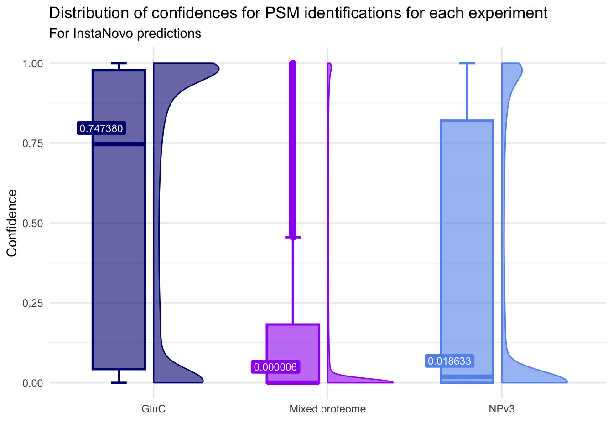
Confidence filter
gluc_paired_mean_abundances_filtered <- gluc_MBR_psms |>
mutate(meas_mass = round(meas_mass, digits = 2),
MBR = is.na(conf),
file_id = str_extract(file_id, '\\D*')) |>
mutate(conf = ifelse(is.na(conf), 0, conf)) |>
filter(10**conf >= 0.95) |>
mutate(conf = ifelse(MBR, NA, conf)) |>
group_by(sequence, meas_mass, MBR, file_id) |>
summarise(mean_abundance = mean(abundance, na.rm = TRUE), .groups = 'drop') |>
pivot_wider(names_from = MBR,
names_prefix = 'mean_abundance_MBR_',
values_from = mean_abundance) |>
drop_na()
t.test(x = gluc_paired_mean_abundances_filtered$mean_abundance_MBR_FALSE,
y = gluc_paired_mean_abundances_filtered$mean_abundance_MBR_TRUE,
paired = TRUE)
Paired t-test
data: gluc_paired_mean_abundances_filtered$mean_abundance_MBR_FALSE and gluc_paired_mean_abundances_filtered$mean_abundance_MBR_TRUE
t = 1.327, df = 8839, p-value = 0.1846
alternative hypothesis: true mean difference is not equal to 0
95 percent confidence interval:
-1235778 6414712
sample estimates:
mean difference
2589467 mixed_paired_mean_abundances_filtered <- mixed_MBR_psms |>
filter(file_id != 'A1') |>
mutate(meas_mass = round(meas_mass, digits = 2),
MBR = is.na(conf),
file_id = str_extract(file_id, '\\D*')) |>
mutate(conf = ifelse(is.na(conf), 0, conf)) |>
filter(10**conf >= 0.95) |>
mutate(conf = ifelse(MBR, NA, conf)) |>
group_by(sequence, meas_mass, MBR, file_id) |>
summarise(mean_abundance = mean(abundance, na.rm = TRUE), .groups = 'keep') |>
pivot_wider(names_from = MBR,
names_prefix = 'mean_abundance_MBR_',
values_from = mean_abundance) |>
drop_na()
t.test(x = mixed_paired_mean_abundances_filtered$mean_abundance_MBR_FALSE,
y = mixed_paired_mean_abundances_filtered$mean_abundance_MBR_TRUE,
paired = TRUE)
Paired t-test
data: mixed_paired_mean_abundances_filtered$mean_abundance_MBR_FALSE and mixed_paired_mean_abundances_filtered$mean_abundance_MBR_TRUE
t = 0.16208, df = 1184, p-value = 0.8713
alternative hypothesis: true mean difference is not equal to 0
95 percent confidence interval:
-1728151 2039392
sample estimates:
mean difference
155620.7 NPv3_paired_mean_abundances_filtered <- NPv3_MBR_psms |>
filter(str_detect(file_id, '40')) |>
mutate(meas_mass = round(meas_mass, digits = 2),
MBR = is.na(conf)) |>
mutate(conf = ifelse(is.na(conf), 0, conf)) |>
filter(10**conf >= 0.95) |>
mutate(conf = ifelse(MBR, NA, conf)) |>
group_by(sequence, meas_mass, MBR) |>
summarise(mean_abundance = mean(abundance, na.rm = TRUE), .groups = 'drop') |>
pivot_wider(names_from = MBR,
names_prefix = 'mean_abundance_MBR_',
values_from = mean_abundance) |>
drop_na()
t.test(x = NPv3_paired_mean_abundances_filtered$mean_abundance_MBR_FALSE,
y = NPv3_paired_mean_abundances_filtered$mean_abundance_MBR_TRUE,
paired = TRUE)
Paired t-test
data: NPv3_paired_mean_abundances_filtered$mean_abundance_MBR_FALSE and NPv3_paired_mean_abundances_filtered$mean_abundance_MBR_TRUE
t = -0.75771, df = 761, p-value = 0.4489
alternative hypothesis: true mean difference is not equal to 0
95 percent confidence interval:
-5670834 2512327
sample estimates:
mean difference
-1579254